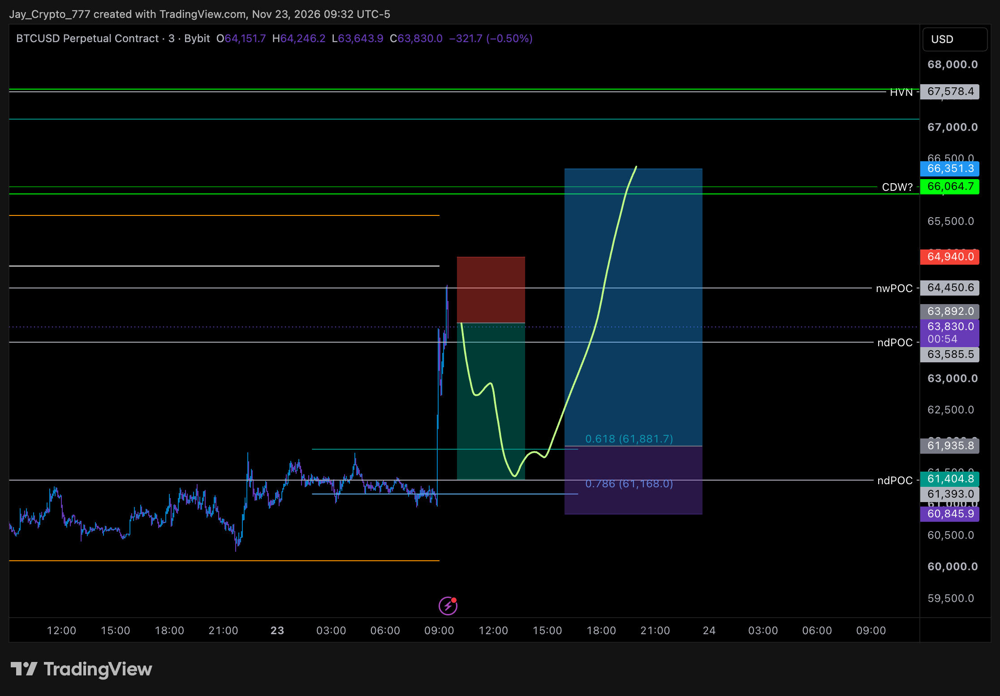

23/11 12h (cobre 22/11 19h → 23/11 12h): VIP-trades agora 🟢spy-macro-short, 🟢cake, 🟠xau-trade, 🟢btc-long (era 🔴), 🟢btc-hedge-short (NOVO). || 22/11 12h (cobre 21/11 19h → 22/11 12h): VIP-trades inalterado (🟢spy-macro-short, 🟢cake, 🟠xau-trade, 🔴btc-long), sem posts novos; Adaśko só o resumo diário de 22/11 11h08; vip-cobra-updates sem posts novos. || 21/11 12h (cobre 20/11 19h → 21/11 12h): VIP-trades agora 🟢spy-macro-short, 🟢cake (era 🟠), 🟠xau-trade, 🔴btc-long; o canal 🔴btc-short saiu da categoria. btc-long: 20/11 20h07 "Back above for the daily candle close + SPY hit support", 20h22 "I am looking to re long here. Lows swept + median reclaimed"; 21/11 11h26 "sitting in swing long… SL below the daily low. Average entry at 58050". cake 21/11 11h26 "CAKE trade still open. Currently at entry". xau/spy sem post novo. vip-cobra-updates 21/11 10h48–11h37: desculpas pelo atraso, app de copy-trading só para VIP (sem níveis), pediu para olhar TOTAL2/TOTAL3 e USDT.D+USDC.D. Adaśko 21/11 09h44 (Hopium daily): ETFs 20/11 negativos (IBIT −124,5M), Fear & Greed 7 (CMC) / 12, OI em novas mínimas, TOTAL2/TOTAL3 no suporte macro, dominância das stables na resistência macro, ETH/BTC muito forte; próximo evento PIB/Core PCE 25/11 10h30. || 20/11 19h: VIP-trades — 🔴btc-short (era 🟠: 17h03 "Removing limit orders"), canal NOVO 🔴btc-long (long a mercado 13h12, SL 57,7k, fechado 15h45), 🔴eth-macro-long saiu da categoria; 🟢spy-macro-short (16h26 gráfico, sem níveis), 🟠xau-trade (16h59 imagem, sem níveis), 🟠cake sem post. vip-cobra-updates: 13h16 "OI soon at new lows", 13h19 "TOTAL approaching the macro median line again". Adaśko: nada depois das 12h. || 20/11 12h: VIP-trades sem mudança de emoji nem canal novo (🟢spy-macro-short, 🔴eth-macro-long, 🟠cake, 🟠xau-trade, 🟠btc-short). Único post desde 19/11 19h: xau-trade 19h04 (texto, sem níveis). vip-cobra-updates: nada após 19/11 11h05. Adaśko 20/11 10h37 (Hopium daily: ETFs 19/11 −582,3M; Fear & Greed 10–12, medo extremo; heatmaps sugerem o BTC varrer mais um pouco das mínimas; ETH/BTC forte; sem níveis de trade) + fórum charts: Ethereum 10h21 (ETH varreu o cluster macro de liquidações e segura a Schiff macro), BNB 10h28 ('zona de resistência invalidada, esperando confirmação de fundo'). | 19/11 12h (cobre 18/11 19h → 19/11 12h): VIP-trades agora 🟢spy-macro-short, 🔴eth-macro-long, 🟠cake, 🟠xau-trade e 🟠btc-short (NOVO, 19/11 08h41). xau-trade segue sem níveis; cake/eth/spy sem post novo. Adaśko-updates 19/11 09h41: ETF 18/11 −306,5M (IBIT), medo extremo, novas resistências para ETH e BNB, suportes macro mantidos. vip-cobra-updates 19/11 11h05: sorteio de conta financiada (sem níveis).
Cobra: resistência importante, hedge short caso tudo caia (correlaciona com a resistência das bolsas); 'Filled' 11h01, 'Nailed it' 11h09. Binance tocou 63.674 às 10h59; desde então máx. 64.603, BTC ≈63.058 (~+1,0% a favor). Stop e alvos não tocados. Range deviation (Central Command, 23/11 ~12h): BTC 1h VERMELHO ativo desde ~09h = esticado p/ cima (procurar short, realizar longs), preço acima da fita; BTC 4h neutro (último azul 21/11), preço cruzou a fita para cima e está no topo dela (gatilho de alta no 4h). → 1h apoia o short; 4h contra. Sem divergência confirmada do MC B citada.
HOJE 12h (23/11): canal agora 🟢btc-long, sem post novo. BTC ≈63.058 (+8,6% sobre 58.050); mín. desde 22/11 19h 60.386, stop ≈55.100 intacto. Range deviation (Central Command, 23/11 ~12h): BTC 1h VERMELHO ativo desde ~09h = esticado p/ cima (procurar short, realizar longs), preço acima da fita; BTC 4h neutro (último azul 21/11), preço cruzou a fita para cima e está no topo dela (gatilho de alta no 4h). → 1h vermelho: realizar parcial; 4h apoia o long. | HOJE 12h (22/11): sem post novo. BTC ≈61.040 (+5,2% sobre o médio 58.050); mín. desde 21/11 19h 58.769, stop ≈55.100 intacto. Range deviation (Central Command, 22/11 ~12h): BTC 4h AZUL ativo nas últimas velas = apoia o long (não vender), preço entrando na fita por baixo, ainda sem cruzar; BTC 1h neutro (azul terminou 21/11 ~09–10h), preço no topo da fita, já cruzou para cima depois da zona = gatilho no 1h. | HOJE 12h (21/11): NOVO — 20/11 20h22 "I am looking to re long here. Lows swept + median reclaimed" (BTC ≈59.067 na Binance) e 21/11 11h26 "I am sitting in swing long here now… SL below the daily low. Average entry at 58050". Stop ≈55.100 = logo abaixo da mínima do dia (55.130, 21/11 ~03h BRT na Binance); o número exato não foi postado. Sem alvos. Agora ≈60.312 (+3,9% sobre o preço médio; ≈+0,75R pelo stop aproximado). Entrou no placar como aberta (entrada 58.050, stop ≈55.100). Leitura: long contra a tendência maior (4h/12h/1D ainda em baixa), apoiado pela varredura das mínimas e pelo Range deviation AZUL no 4h; sem cruzar a fita de EMAs nem divergência confirmada do MC B no 4h/12h/1D citada — pelas regras do relatório seria só papel. Zona: 4h azul APOIA o long, mas falta o gatilho (preço passar acima da fita). Range deviation (Central Command, 21/11 ~12h): BTC 4h AZUL em várias velas de 20/11 ~09h a 21/11 ~09h BRT, vela atual verde e neutra; preço ABAIXO da fita, só encostando na borda de baixo, sem cruzar. BTC 1h AZUL de ~00h a ~04h BRT de hoje, depois velas neutras subindo; preço na borda de baixo/parte de baixo da fita, sem passar o topo.
HOJE 19h (20/11): NOVO — 13h11 "I am looking to market long here" (preço chegou na linha mediana, ainda sem varrer as mínimas; metade do risco); 13h12 entrada a mercado, SL nas mínimas 57,7k, sem alvo. 13h25 "MANAGE RISK HERE! We are buying a falling knife"; 13h26 quem quiser segurança pode esperar o fechamento diário. 15h45 "Closing long here" / "Market not holding well" — fechou ≈58.643 (Binance 1m 15h45), ≈−0,54R pelo stop dele (meio risco). Disse que reentra se o fechamento diário for altista. Entrada ≈59.746 = fechamento 1m das 13h12 na Binance. Leitura: long contra a tendência (4h/12h/1D em baixa), só apoiado pelo Range deviation AZUL (esticado para baixo) e sem gatilho de cruzar a fita nem divergência confirmada do MC B no 4h/12h — pelas regras do relatório seria só papel. Range deviation (Central Command, 20/11 ~19h13): BTC 4h AZUL nas 3 últimas velas (desde ~05h BRT), preço ABAIXO da fita, sem cruzar; BTC 1h AZUL de ~15h a ~18h BRT, vela atual neutra, preço abaixo da fita (tocando a EMA8), sem cruzar.
HOJE 12h (21/11): canal 🔴btc-short saiu da categoria; segue cancelado (0R). | HOJE 19h (20/11): MUDOU — 17h03 o Cobra escreveu "Removing limit orders" no canal (emoji virou 🔴). Ordem cancelada antes de acionar (máx. do BTC desde 19/11 = 62.640, longe da entrada): placar Cancelado (0R). O alerta antigo no TradingView para este short (se houver) perdeu sentido. Range deviation (Central Command, 20/11 ~19h13): BTC 4h AZUL nas 3 últimas velas (desde ~05h BRT), preço ABAIXO da fita, sem cruzar; BTC 1h AZUL de ~15h a ~18h BRT, vela atual neutra, preço abaixo da fita (tocando a EMA8), sem cruzar. | HOJE 12h (20/11): sem post novo; segue PENDENTE (máx. do BTC desde 19/11 19h 62.640; agora ≈61.325). Range deviation (Central Command, 20/11 ~12h15): BTC 1h AZUL na vela atual (e ~2 velas por volta das 09h–10h BRT), preço ABAIXO da fita de EMAs, fita para baixo, sem cruzar de volta; BTC 4h AZUL na vela atual (e bloco azul de ~4–5 velas em 19–20/11), preço na borda de baixo/abaixo da fita, fita para baixo, sem cruzar. (4h azul: não vender na pancada; entradas bem acima.) | HOJE 19h (19/11): sem post novo; segue PENDENTE (máx. do BTC desde 12h 63.916; agora ≈61.781). Range deviation (Central Command, 19/11 ~19h20): BTC 1h AZUL nas últimas ~4 velas (esticado para baixo), preço ABAIXO da fita de EMAs, só encostando na borda de baixo, sem cruzar; BTC 4h AZUL nas últimas ~2–3 velas, preço ABAIXO da fita (fita inclinada para baixo), sem cruzar. (4h azul: não vender na pancada; as entradas ficam bem acima.) | NOVO 19/11 08h45: "First trade: ENTRY 66500, SL 67710, FINAL TP 59800. I am trading this on bitunix" (gráfico 2h às 08h44; zona de oferta de 13–14/11). Pendente: BTC ≈63.758, máx. 64.081 desde 18/11 19h; entrada ≈4,3% acima. Sem alvos intermediários. Entrou no placar como pendente. Alerta TV criado (66.500). Range deviation (Central Command, 19/11 12h08): BTC 1h neutro, preço de volta dentro da fita de EMAs (meio/parte de cima), sem romper o topo; BTC 4h AZUL (esticado para baixo) nas últimas velas, preço na borda de baixo da fita, ainda sem cruzar. Short a favor da tendência maior; sem divergência de 4h/12h/1D citada.
HOJE 12h (21/11): canal 🔴btc-short saiu da categoria; segue cancelado (0R). | HOJE 19h (20/11): MUDOU — 17h03 o Cobra escreveu "Removing limit orders" no canal (emoji virou 🔴). Ordem cancelada antes de acionar (máx. do BTC desde 19/11 = 62.640, longe da entrada): placar Cancelado (0R). O alerta antigo no TradingView para este short (se houver) perdeu sentido. Range deviation (Central Command, 20/11 ~19h13): BTC 4h AZUL nas 3 últimas velas (desde ~05h BRT), preço ABAIXO da fita, sem cruzar; BTC 1h AZUL de ~15h a ~18h BRT, vela atual neutra, preço abaixo da fita (tocando a EMA8), sem cruzar. | HOJE 12h (20/11): sem post novo; segue PENDENTE (máx. do BTC desde 19/11 19h 62.640; agora ≈61.325). Range deviation (Central Command, 20/11 ~12h15): BTC 1h AZUL na vela atual (e ~2 velas por volta das 09h–10h BRT), preço ABAIXO da fita de EMAs, fita para baixo, sem cruzar de volta; BTC 4h AZUL na vela atual (e bloco azul de ~4–5 velas em 19–20/11), preço na borda de baixo/abaixo da fita, fita para baixo, sem cruzar. (4h azul: não vender na pancada; entradas bem acima.) | HOJE 19h (19/11): sem post novo; segue PENDENTE (máx. do BTC desde 12h 63.916; agora ≈61.781). Range deviation (Central Command, 19/11 ~19h20): BTC 1h AZUL nas últimas ~4 velas (esticado para baixo), preço ABAIXO da fita de EMAs, só encostando na borda de baixo, sem cruzar; BTC 4h AZUL nas últimas ~2–3 velas, preço ABAIXO da fita (fita inclinada para baixo), sem cruzar. (4h azul: não vender na pancada; as entradas ficam bem acima.) | NOVO 19/11 08h46 (editado): "Second trade: ENTRY 68120, SL 69940, FINAL TP 57486. I am trading this on bitunix" (fib 0,5 no gráfico 2h). Pendente: entrada ≈6,8% acima. Sem alvos intermediários. Entrou no placar como pendente. Alerta TV criado (68.120). Range deviation (Central Command, 19/11 12h08): BTC 1h neutro, preço de volta dentro da fita de EMAs (meio/parte de cima), sem romper o topo; BTC 4h AZUL (esticado para baixo) nas últimas velas, preço na borda de baixo da fita, ainda sem cruzar.
HOJE 12h (23/11): Cobra 11h02 'Off we go'. CAKE ≈1,608 (+8,6%); mín. desde 22/11 19h 1,499, stop 1,339 intacto. Range deviation: 1h VERMELHO ativo (realizar parcial, não comprar mais); 4h neutro com preço cruzando a fita para cima (apoia). | HOJE 12h (22/11): sem post novo. CAKE ≈1,513 (+2,2% sobre 1,481); mín. desde 21/11 19h 1,448, stop 1,339 intacto. Range deviation (Central Command, 22/11 ~12h): CAKE 1h VERMELHO ativo desde ~12h = esticado p/ cima (contra comprar mais; bom lugar para realizar parcial); CAKE 4h neutro (azul de 21/11 terminou à tarde), preço na borda de baixo da fita, sem cruzar para cima. | HOJE 12h (21/11): canal virou 🟢 (posição aberta); 11h26 "CAKE trade still open. Currently at entry". Mínima desde 20/11 19h = 1,376, stop 1,339 intacto; agora ≈1,481 (na entrada). Zona: 4h e 1h AZUL = apoia o long (não vender), mas sem gatilho de cruzar a fita. Range deviation (Central Command, 21/11 ~12h): CAKE 4h AZUL de ~21h de 20/11 a ~09h BRT de hoje (últimas velas), preço na borda de baixo/abaixo da fita, sem cruzar. CAKE 1h AZUL de ~00h a ~04h BRT, depois neutro subindo devagar; preço na parte de baixo da fita, sem cruzamento claro. | HOJE 19h (20/11): MUDOU — pela Binance o CAKE caiu até 1,449 depois do meio-dia e tocou a entrada 1,481 por volta das 12h45 (vela 5m, mín. 1,466): ACIONOU mecanicamente. Stop 1,339 intacto; agora ≈1.489. Sem post novo do Cobra no canal (emoji segue 🟠, último post 16/11). Range deviation (Central Command, 20/11 ~19h13): CAKE 4h AZUL nas 3 últimas velas, preço ABAIXO da fita, sem cruzar de volta; CAKE 1h AZUL de ~15h a ~18h BRT, vela atual neutra, preço abaixo da fita (inclinada para baixo), sem cruzar. Azul APOIA o long (esticado para baixo), mas ainda sem o gatilho de cruzar a fita. | HOJE 12h (20/11): sem post novo; segue PENDENTE (CAKE ≈1,551, mín. 1,542 desde 19/11 19h — não acionou; entrada ≈4,5% abaixo). Range deviation (Central Command, 20/11 ~12h15): CAKE 1h AZUL (vela atual + ~2 antes), abaixo da fita, fita para baixo, sem cruzar; CAKE 4h AZUL (vela atual + ~2 antes), abaixo/na borda de baixo da fita, fita para baixo, sem cruzar. (azul apoia o long, mas sem gatilho de cruzar a fita.) | HOJE 19h (19/11): sem post novo; segue PENDENTE (CAKE ≈1,567, mín. 1,560 desde 12h — não acionou; entrada ≈5,5% abaixo). RD do CAKE não relido às 19h (n/d). | HOJE 12h (19/11): sem post novo. Segue PENDENTE: CAKE ≈1,615, mín. 1,553 / máx. 1,628 desde 18/11 19h — não acionou; entrada ≈8,3% abaixo. Range deviation (Central Command, 19/11 12h08): CAKE 1h neutro, preço cruzou para CIMA da fita depois da zona azul (gatilho de alta confirmado no 1h); CAKE 4h neutro (último azul na madrugada de 19/11), preço encostando/entrando na parte de baixo da fita, sem cruzamento claro. (1h a favor do long; 4h neutro.) Alerta TV 1,481 já existe. | HOJE 12h (18/11): sem post novo. Segue PENDENTE: CAKE ≈1,597 (Binance), mín. 1,555 / máx. 1,664 desde 16/11 12h — não acionou; entrada ≈7,3% abaixo. Range deviation (Central Command — leitura não recebida até 12h30): n/d Alerta TV 1,481 já existe (não duplicado). | HOJE 12h (16/11): o Cobra repostou às 11h36 o gráfico semanal com zoom ("CAKE chart zoomed in a bit"), mesmos níveis (entrada ≈1,481 / stop ≈1,339 / alvo ≈3,061). Segue PENDENTE: CAKE ≈1,571 (Binance), mín. 1,554 nas últimas 30h — entrada ≈5,7% abaixo. Range deviation ~12h10 (CC): 4h AZUL nas últimas ~4 velas, abaixo da fita sem cruzamento; 1h neutro (AZUL há ~3 velas), abaixo da fita, sem cruzar para cima — apoia procurar long, ainda sem gatilho. Alerta TV 1,481 já existe (não duplicado). | NOVO 15/11 10h06: "Looking to go long CAKE soon… we are coming to the lower end of the range, always a good place to look for longs into a strong demand zone while sentiment is bad." Ele avisa que arrisca bem menos em altcoins do que em BTC/ETH. Níveis do gráfico: entrada 1,481, stop 1,339, alvo 3,061 (RR ≈11). CAKE ≈1,587 (Binance), entrada ≈6,7% abaixo; mín. 1,527 nas últimas 18h — não acionou. Range deviation ~12h (CC): 1h neutro (AZUL há ~10 velas) e 4h AZUL, abaixo da fita nos dois, sem cruzamento — esticado para baixo: apoia procurar long, mas ainda sem gatilho. Regras do o relatório: MC B do CAKE não verificado nesta rodada; o próprio Cobra pede esperar o fechamento semanal e confirmação no 4h antes de entrar (prioridade do tempo maior). Alerta TV criado em 1,481.
HOJE 19h (20/11): 16h59 só imagem do ouro (queda até zona de suporte/demanda azul-verde), sem texto e sem níveis → segue fora do placar. | HOJE 19h (19/11): post 19h04: "We are crashing fast. If DXY continues to pump I think we will get this target rather quickly" — só texto, sem entrada/SL/TP (o gráfico do canal é de 18/11 14h00). | HOJE 12h (19/11): sem post novo; segue sem níveis. | KingCobra: "Trade will come soon. So far its no rush yet, I expect GOLD to continue go lower here for the next weeks, maybe even months"; disse que dá para operar ouro/prata na BloFin. Direção ainda não definida (07h37 ele falou em ≈3.300 para swing longs macro). Sem níveis → fora do placar e sem alerta.
HOJE 12h (18/11): sem post novo; NEAR ≈3,303 (mín. 3,097 / máx. 3,430 desde 16/11 12h). Range deviation (Central Command — leitura não recebida até 12h30): n/d | HOJE 12h (16/11): sem post novo; NEAR ≈3,152. | HOJE 12h (15/11): o Cobra escreveu às 08h46: "I didnt enter. Since no update, price came down too fast." Emoji segue 🟠. No placar fica a mecânica (acionou 13/11 01h e estopou 14/11, −1R), com a nota do autor de que não entrou. NEAR ≈3,132. | HOJE 19h (14/11): MUDOU — pela Binance o NEAR caiu até 2,870 depois do meio-dia, abaixo do stop ≈3,049: estopado mecanicamente (−1R). O Cobra ainda não postou nada no canal (emoji segue 🟠). NEAR ≈2.940. Range deviation não relido às 19h (trade já encerrado). | HOJE 12h (14/11): sem post novo do Cobra. NEAR caiu para ≈3,217 (mín. 3,200 desde ontem 18h), agora ≈1,5% abaixo da entrada 3,265 (≈−0,2R); stop ≈3,049 intacto (a ≈5% de distância). Range deviation ~12h (CC): 1h AZUL e 4h AZUL, preço abaixo da fita nos dois, sem cruzamento para cima — esticado para baixo: apoia segurar/procurar long, mas ainda sem gatilho de confirmação. Pelas regras do relatório, sem divergência de alta confirmada do MC B no 4h/12h/1D. | HOJE 12h (13/11): ACIONOU pela mecânica: a mínima do NEAR na Binance foi exatamente 3,265 à 01h (dentro da tolerância de 0,1%); stop ≈3,049 intacto. Depois subiu forte até 3,639 (10h); agora ≈3,522 (+7,9% sobre a entrada). O Cobra não postou nada no canal desde 10/11 (não confirmou se entrou). Range deviation ~12h08 (CC): 1h neutro (último AZUL há ~8–9 velas), preço na borda de cima da fita (~3,53), cruzou para cima; 4h neutro (AZUL há 1–2 velas), dentro da fita, cruzou de baixo — virando a favor do long. Pelas regras do relatório (MC B, 09h): 4h deu ponto verde à 01h, mas há baixa oculta ✓ no 4h e no 12h e baixa regular ✓ no 1D — sem divergência de alta confirmada no tempo maior, então pelas regras não seria entrada; para quem já está dentro, o stop 3,049 segue longe. | HOJE 19h (12/11): sem post novo; NEAR ≈3,404 (mín. 3,422 às 08h, ainda acima da entrada 3,265); não acionou. Range deviation: não relido no Central Command nesta rodada (sem trade novo com entrada); pela análise intradiária das 15h, todos os ativos seguem abaixo da fita de EMAs no 1h/4h, sem cruzamento de alta. | HOJE 12h (11/11): Sem post novo (último 10/11 07h00). NEAR ≈3,712 (mín. 3,471 em 24h), entrada ≈12% abaixo, não acionou. Alerta 3,265 já existe. Range deviation ~12h15 (CC): 1h VERMELHO ativo, preço no topo de uma fita comprimida (esticado para cima no curto prazo); 4h neutro (último AZUL há ~3 velas), vela verde grande subindo para dentro da fita, sem cruzar para cima — misto; a entrada do plano (≈3,265) está bem abaixo. | NOVO: “depois de esperar mais de 2 meses, finalmente vejo um setup decente… vou colocar alertas logo acima do 0,31 (Fibo ≈3,263 no semanal). Se gostar do que vir nesse nível, entro long.” Níveis lidos da caixa do gráfico 1W (≈): entrada ≈3,265 (caixa ≈3,247), stop ≈3,049, alvo ≈9,147 (RR ≈27). É um plano condicionado, ainda sem ordem. NEAR ≈3,708, entrada ≈12% abaixo. Range deviation ~12h20 (CC): 1h VERMELHO (uma barra, vela atual), preço acima da fita; 4h AZUL ativo, preço na borda de baixo da fita, cruzamento incerto — misto; a entrada do plano é bem mais abaixo (≈3,265). Pelas regras do relatório, o ideal é esperar divergência de alta confirmada do MC B no 4h/12h/1D perto de 3,26. Alerta criado no TradingView.
HOJE 19h (20/11): o canal eth-macro-long saiu da categoria VIP-trades (trade já encerrado; placar mantém −1R). | HOJE 12h (18/11): sem post novo (17/11 09h19 "ETH update out" no canal ethereum-vip, não aberto); ETH ≈1.772 (mín. 1.751 / máx. 1.847 desde 16/11 12h). | HOJE 12h (16/11): sem post novo; ETH ≈1.818. | HOJE 12h (15/11): o Cobra confirmou às 08h46: "Stopped... Was a good setup still looking back. But the market was not behaving normally." Emoji virou 🔴. Placar mantém −1R (stop 1.820,44 batido 14/11 à tarde). ETH ≈1.809. Range deviation não relido (trade encerrado). | HOJE 19h (14/11): MUDOU — pela Binance o ETH caiu até 1.750 depois do meio-dia, abaixo do stop ≈1.820,44: estopado mecanicamente (−1R). O Cobra ainda não postou no canal (emoji segue 🟠); às 16h49 em vip-cobra-updates disse que BTC e ETH estão ‘bem dentro do suporte, mas ainda há chance de repique’. ETH ≈1,744. Range deviation não relido às 19h (trade já encerrado). | HOJE 12h (14/11): sem post novo no canal. ETH ≈1.850 (mín. 1.845 desde ontem 18h), ≈4,5% abaixo da entrada 1.936,66 (≈−0,74R); stop ≈1.820,44 intacto mas perto (≈1,6% abaixo). Adaśko (charts, 10h08): ETH “suporte macro atingido”. Range deviation ~12h (CC): 1h AZUL e 4h AZUL, abaixo da fita, sem cruzamento — esticado para baixo, apoia o long, mas sem gatilho. Pelas regras do relatório, sem divergência de alta confirmada no tempo maior. | HOJE 12h (13/11): ACIONOU: o ETH caiu até 1.917 às 00h (Binance), passando pela entrada 1.936,66; mínima 1.895,95 às 02h, stop ≈1.820,44 intacto. 07h37 Cobra: “Estou long aqui no ETH; como falei no episódio de hoje, pode descer de novo para tocar a linha mediana… já que nos antecipamos até agora.” Gráfico ETH/USD 1D (Kraken) com caixa: entrada ≈1.950 (1.951,14), stop ≈1.819,96, alvo ≈2.796,36 (RR ≈6,5); 07h38 mesma caixa com stop ≈1.817,28 e alvo ≈2.807,41. É o mesmo trade do plano de 09/11 (stop praticamente igual; alvo um pouco menor), por isso NÃO entrou como trade novo no placar (sem contar duas vezes): no placar fica a entrada 1.936,66 (acionada 00h). ETH ≈1.938,8 agora, quase na entrada (+0,1%). Range deviation ~12h08 (CC): 1h neutro (último AZUL há ~5 velas), preço voltou para a parte de baixo da fita (~1.940–1.960) depois de cruzar de baixo; 4h AZUL ativo, preço abaixo da fita — esticado para baixo, apoia o long. Pelas regras do relatório (MC B, 09h): sem divergência de alta confirmada no 4h/12h/1D; há baixa oculta ✓ no 4h e no 1D do ETH (4h subindo, ainda sem ponto verde) — o long está contra o tempo maior pelas regras; a favor só o Range deviation 4h AZUL (esticado para baixo). Alerta: não precisa (já acionado). | HOJE 19h (12/11): sem post novo; ETH ≈2.016 (mín. 1.983,8 hoje, ainda acima da entrada 1.936,66); não acionou. Range deviation: não relido no Central Command nesta rodada (sem trade novo com entrada); pela análise intradiária das 15h, todos os ativos seguem abaixo da fita de EMAs no 1h/4h, sem cruzamento de alta. | HOJE 12h (11/11): Sem post novo (último 10/11 11h47). ETH ≈2.055 (mín. 2.006 em 24h), entrada ≈6% abaixo, não acionou. Alerta 1.936,66 já existe. Range deviation ~12h15 (CC): 1h neutro (último AZUL há ~17 velas), na borda de baixo da fita, sem cruzar; 4h AZUL ativo, abaixo da fita, sem cruzar — apoia procurar long mais abaixo; gatilho ainda não veio. | HOJE 12h (10/11): 11h47 “Patience for ETH” com gráfico 1W novo: caixa de long ≈1.938,69 / SL 1.820,44 / alvo ≈2.982,31 (o gráfico ainda marca 1.936,66 e 2.893,23 e uma zona verde “Absolute lowest support for ETH”). Mantidos os níveis originais (diferença pequena; alerta de 1.936,66 já existe). ETH ≈2.085,8 (mín. 2.028 desde ontem 19h), entrada ≈7% abaixo, não acionou. Range deviation ~12h20 (CC): 1h AZUL ativo e 4h AZUL ativo, preço abaixo da fita nos dois, sem cruzar — apoia procurar long mais abaixo; gatilho ainda não veio. | NOVO: Cobra postou "Big ETH trade cooking" às 11h33 e o gráfico com a ordem às 12h06 ("Loading ⏳"). Níveis lidos da caixa do gráfico (≈): entrada 1.936,66, stop 1.820,44, alvo 2.893,23 (RR ≈8,2). Preço atual ≈2.127,6, a entrada está ≈9% abaixo — limite longe, ainda não acionou. Range deviation (Central Command): 1h e 4h com a última zona AZUL (esticado para baixo, procurar long) e o preço ainda abaixo da fita de EMAs, sem cruzamento de confirmação. Zona apoia a ideia de long; o gatilho ainda não veio. Pelas regras do relatório, o ideal é esperar divergência de alta confirmada do Market Cipher B no 4h/12h/1D perto de 1.936 antes de confiar.
HOJE 12h (13/11): Canal 🔴avve-long saiu da lista da categoria (trade já encerrado). AAVE ≈113,08. | HOJE 19h (12/11): canal virou 🔴. 12h55 Cobra: “I took -0.5R on this one. Luckily I didnt risk full size.” AAVE fez mínima 110,76 hoje (abaixo do stop 114,6); agora ≈113,99. No placar a mecânica conta o stop; a coluna Autor mostra −0,5R. Range deviation: não relido no Central Command nesta rodada (sem trade novo com entrada); pela análise intradiária das 15h, todos os ativos seguem abaixo da fita de EMAs no 1h/4h, sem cruzamento de alta. | HOJE 12h (11/11): Sem post novo (último 09/11 11h02). AAVE ≈122,7 (mín. 120,83 em 24h), ≈6% abaixo da entrada; stop 114,6 intacto. Range deviation ~12h15 (CC): 1h AZUL ativo e 4h AZUL ativo, preço abaixo/na borda de baixo da fita, sem cruzar — esticado para baixo, apoia segurar o long; sem gatilho ainda. | HOJE 12h (10/11): Sem post novo (último 09/11 11h02). AAVE ≈125,7 (mín. 122,71 desde ontem 19h), ≈4% abaixo da entrada; stop 114,6 intacto. Range deviation ~12h20 (CC): 1h AZUL ativo, preço na borda de baixo da fita; 4h AZUL ativo (barra fina), na borda de baixo; sem cruzar — esticado para baixo, apoia segurar o long; sem gatilho ainda. | HOJE 12h (07/11): Sem post novo no canal. AAVE ~131,80 (128,66–132,63 desde ontem 19h), pouco acima da entrada; stop intacto. Range deviation ~12h27 (CC): 1h neutro (último AZUL há ~42 velas), ACIMA da fita, gatilho de alta confirmado; 4h neutro (último AZUL há ~10 velas), dentro da fita, sem gatilho — apoia o long (1h confirmado, 4h ainda não). | HOJE 12h (06/11): NOVO. 12h28 “Trade loading!” + gráfico semanal AAVE; 12h31 “entering my first AAVE long here”; ainda sem tamanho cheio; se fechar acima do 0,31 no fim de semana, adiciona. Níveis lidos do long-position tool no gráfico: entrada ≈130,66 / SL 114,60 / TP 249,78 (linha cinza 188 pode ser intermediária). AAVE ~131,39 (acima da entrada). RR até TP ≈7,4. Sem alerta (entrada a mercado). vip-cobra-updates 09h25: AAVE segura forte apesar da queda do BTC. Range deviation ~13h20 (CC): 1h neutro (último AZUL 05/11), gatilho fraco (preço cruzou acima da fita bem flat); 4h neutro (último AZUL 05/11), gatilho marginal (preço no topo da fita) — apoia LONG de forma fraca; contra short. Entrou no placar nesta rodada.
MUDOU desde o meio-dia: o canal ltc-long sumiu da categoria VIP-trades. Pela Binance o LTC fez mínima 49,26 em 08/11 por volta das 18h (abaixo do stop 50,2), então o stop foi batido. No #vip-chat um membro (não o Cobra) escreveu "Ltc stopped out" às 04h58 de hoje; o Cobra não postou confirmação.
HOJE 12h (23/11): Cobra espera rejeição em 7.180 e quer aumentar o short a partir de 7.286 (zona de oferta). Range deviation n/d (não lido). | HOJE 19h (20/11): 16h26 gráfico do SPY com zona de short e pitchfork: "Looking for sth like this, where I will add heavily to my shorts on the bounce" — sem níveis numéricos novos. Range deviation: n/d (tradfi). | HOJE 12h (19/11): sem post novo no canal. Range deviation: n/d (tradfi). | HOJE 12h (18/11): sem post novo no canal (SPY fora da Binance; segue a nota anterior). Range deviation (Central Command — leitura não recebida até 12h30): n/d | HOJE 12h (16/11): sem post novo. Range deviation ~12h10 (CC, SPY ≈746,0): 1h AZUL na última vela, rompendo para baixo da fita (~752); 4h neutro (último VERMELHO há ~20 velas), cruzou para baixo da fita (~753) nas últimas velas — o 4h confirma a perda da fita, a favor do short; o 1h azul pede cuidado com repique curto. | HOJE 12h (15/11): sem post novo (último 05/11). Range deviation ~12h (CC, SPY ≈749,5): 1h neutro (último AZUL há ~10 velas), abaixo da fita, sem cruzamento; 4h neutro (AZUL há ~36 velas), abaixo da fita (cruzou para cima e voltou) — o 4h segue apoiando o short. | HOJE 19h (14/11): sem post novo; mercado fechado no sábado, nada muda. | HOJE 12h (14/11): sem post novo (mercado fechado no sábado). Range deviation ~12h (CC, SPY): 1h AZUL abaixo da fita (esticado para baixo — contra vender mais agora); 4h neutro, abaixo da fita (último AZUL há ~31 velas; cruzou para cima e voltou para baixo) — o 4h ainda apoia o short. | HOJE 12h (13/11): Sem post novo (último 05/11). Range deviation ~12h08 (CC, SPY/USDT): 1h neutro (VERMELHO há 1–2 velas), a última vela vermelha grande caiu abaixo da fita (~752,7) — apoia o short; 4h neutro (último AZUL há ~28 velas), vela vermelha na/abaixo da borda de baixo da fita. MC B: n/d (tradfi). | HOJE 12h (11/11): Sem post novo (último 05/11 14h59). Range: n/d (tradfi). | HOJE 12h (10/11): Sem post novo (último 05/11 14h59). Range: n/d (tradfi). | HOJE 12h (07/11): Sem post novo no canal. Range: n/d. | HOJE 12h (06/11): Sem post novo. Último 05/11 14h58–14h59: ~70% da posição short; procura alvos e repiques para adicionar. Canal 🟢. Range: n/d (tradfi).
HOJE 12h (10/11): Canal removido da categoria (trade já encerrado). | HOJE 12h (06/11): 12h29 “SL hit breakeven! Good trade overall”. Antes: 05/11 11h32 TP 25%, 12h16 TP 30%, 12h19 SL na entrada. ≈55% realizado com lucro; resto saiu no BE. Canal agora 🔴. PEPE ~5.08e-06. Range deviation ~13h20 (CC): 1h neutro (último VERMELHO ~15h), preço acima da fita sem cruzamento para baixo; 4h neutro (último VERMELHO), sem gatilho — short residual já saiu; não aumentar short sem gatilho.
HOJE 12h (13/11): Canal 🔴btc-hedge-short saiu da lista da categoria. | HOJE 12h (10/11): Canal 🔴btc-hedge-short (sem post novo). | HOJE 12h (06/11): 12h27 “fully out of BTC hedge short. Since we swept the lows”; “bottom is VERY close”. Não foi post de SL; saída voluntária depois de varrer as mínimas (BTC mín. ~74.888 desde 05/11 19h; 74k não bateu). Parcial 77.600 + BE no resto. Canal agora 🔴. BTC ~75,702. Sem níveis numéricos claros: segue fora do placar. Range deviation ~13h20 (CC): 1h neutro (último AZUL há ~2 velas), sem gatilho (abaixo da fita); 4h AZUL, sem gatilho — contra short fresco; long sem confirmação.
HOJE 12h (10/11): Canal removido da categoria (trade já encerrado). | HOJE 12h (06/11): 12h28 “My SL was hit.” Confirma o stop 2.220 (já batido na Binance 05/11 18h25, mín. 2.219). Canal agora 🔴. −1R. ETH ~2,227.61. Já estava no placar como Stop. Range deviation ~13h20 (CC): 1h neutro (último AZUL), sem gatilho; 4h AZUL, sem gatilho — contra short; long sem confirmação.
HOJE 12h (16/11): o canal kas-long saiu da categoria VIP-trades (trade encerrado; placar mantém −1R mecânico / 0R autor). | HOJE 12h (15/11): o Cobra postou às 10h02 que foi estopado na entrada: tinha movido o stop para o breakeven depois do segundo repique (gráfico mostra entrada 0,028487, stop 0,026796, alvo 0,036093). Emoji virou 🔴. No placar a mecânica usa o stop original congelado 0,02655 (−1R); o resultado do autor (0R) vai na coluna Autor. KAS ≈0,02696 (Gate). | HOJE 19h (14/11): MUDOU — pela Gate o KAS caiu até 0,02514 depois do meio-dia, abaixo do stop 0,02655: estopado mecanicamente. O Cobra ainda não postou no canal (emoji segue 🟢). KAS ≈0.02567. Range deviation não relido às 19h (trade já encerrado). | HOJE 12h (14/11): sem post novo. KAS ≈0,02721 (Gate; mín. 0,02693 desde ontem 18h), abaixo da entrada 0,028487; stop 0,02655 intacto (≈2,4% abaixo). Range deviation ~12h (CC): 1h AZUL e 4h AZUL, abaixo da fita, sem cruzamento — esticado para baixo, apoia o long, sem gatilho. | HOJE 12h (13/11): 07h09 Cobra: “As alts estão segurando forte. KAS parecendo bom.” Gráfico KAS 1D com caixa: entrada ≈0,0285 (0,028487), stop ≈0,026796, alvo ≈0,036093; preço no gráfico 0,029316. A entrada é a mesma; stop e alvo do desenho ficaram um pouco diferentes (stop ≈0,0268 vs 0,02655; alvo ≈0,0361 vs 0,0352), mas é o mesmo trade redesenhado — mantidos os níveis originais (sem trade novo). Em 12/11 12h55 ele disse “o trade de KAS segue valendo se você não moveu o SL para a entrada; mas espere pressão do BTC e do ETH”. KAS ≈0,02886 (Gate; mín. 0,02759 à 00h), +1,3% sobre a entrada; stop 0,02655 intacto. Range deviation ~12h08 (CC): 1h neutro (AZUL há ~9 velas), dentro da fita (~0,0290); 4h neutro (AZUL há 1–2 velas), dentro/borda de baixo da fita — neutro. MC B: n/d (KAS fora da análise intradiária). | HOJE 12h (11/11): Sem post novo (último 10/11 11h44). KAS ≈0,02914 (Gate; mín. 0,02881 em 24h), +2,3% sobre a entrada; stop original 0,02655 intacto. Range deviation ~12h15 (CC): n/d (o ativo não existe no Central Command; a página volta para o BTC). | HOJE 12h (10/11): 11h44 “KAS holding strong despite BTC going down” com gráfico 1D: caixa entrada 0,028487 / stop ≈0,026796 / alvo ≈0,036093 (o post de 09/11 dizia SL na entrada e TP1 0,0352; o placar mantém os níveis originais). KAS ≈0,03071 (KuCoin), +7,8% acima da entrada. Range deviation ~12h20 (CC): 1h VERMELHO ativo (esticado para cima), preço acima da fita, sem cruzar para baixo — sinal para realizar parte do long, não aumentar; 4h último AZUL há ~6–7 velas, preço na parte de cima da fita, cruzamento para cima parcial/incerto — 4h ainda apoia o long. | MUDOU desde o meio-dia: Cobra postou "KAS filled" hoje 06h56 e "Moving SL to entry" às 11h48 — agora o stop está na entrada (≈0,028487), trade sem risco. TP1 0,0352; TP2 ainda não definido (mira pelo menos 0,05). Preço atual ≈0,02978 (KuCoin), +4,5% acima da entrada. Range deviation (Central Command): 1h última zona AZUL e o preço já cruzou acima da fita de EMAs depois dela (gatilho de confirmação a favor do long), voltando a testar a fita; 4h última zona AZUL, ainda sem cruzar a fita. Zona apoia o long.
HOJE 12h (13/11): Canal 🔴sol-long saiu da lista da categoria (trade já encerrado). SOL ≈80,03. | HOJE 19h (12/11): canal virou 🔴. 12h54 Cobra: “I exited at entry. I am really sorry for the late updates today.” Saída no zero a zero (sem níveis numéricos). SOL ≈81,41 (mín. 80,46 hoje). | HOJE 12h (11/11): 07h19 “SOL holding up nice here. Watch for the weekly candle close… we gotta print a green weekly candle at some point” com gráfico 1W (LTA vermelha, rótulo ≈82,998), sem caixa de níveis. SOL ≈83,81 (mín. 81,34 em 24h), ≈0,5% abaixo do long pequeno ≈84,2. Ainda sem stop/alvo: fora do placar. Range deviation ~12h15 (CC): 1h neutro (último AZUL há ~7–8 velas), preço na parte de baixo da fita, sem cruzar para cima; 4h AZUL ativo, na base da fita, sem cruzar — apoia o long pequeno, mas sem confirmação. | HOJE 12h (10/11): 11h46 “SOL hit median line. I went long” e “I did just take a small long on SOL, nothing major, I think BTC still will head a bit lower” (gráfico semanal com pitchfork, sem caixa de posição). Preço na Binance às 11h46 ≈84,0–84,3, bem no ≈84,2 que ele destacava desde 31/10. Sem stop nem alvo postados, então o placar não consegue medir em R (fica fora até ele postar o stop). Canal segue 🟠. SOL ≈84,80. Range deviation ~12h20 (CC): 1h AZUL ativo e 4h AZUL ativo, preço abaixo da fita nos dois, sem cruzar — zona apoia o long pequeno do Cobra, mas sem gatilho de confirmação. | HOJE 12h (07/11): Sem post novo no canal. SOL ~89,73 (mín. 89,66), a ≈−6,2% do ≈84,2. Sem nível escrito. Range deviation ~12h27 (CC): 1h neutro (último AZUL há ~28 velas), abaixo da fita, sem gatilho; 4h AZUL ativo, abaixo da fita — apoia procurar long mais abaixo (plano ≈84,2); não vender. | HOJE 12h (06/11): Sem post novo (último 05/11 12h51 “getting closer” / “Lets get it”). Canal 🟠. SOL ~90.41 (mín. 88,30), a ≈-6.9% do ≈84,2. Sem nível escrito; sem alerta novo. Range deviation ~13h20 (CC): 1h neutro (último AZUL ~05h), sem gatilho; 4h neutro (último AZUL), sem gatilho — apoia procurar long mais abaixo; plano do Cobra ainda espera ≈84,2.
Encerrado: o Cobra reentrou no short em 29/10 e foi estopado no 0,31 pela 3ª vez. Hoje 09h10 postou o gráfico 4h do short (entrada ≈81.799, stop ≈82.117, alvo ≈77.230 no 0,31) com 'Olhando agora, ficou ótimo' — o alvo foi atingido depois (mínima 76.500 às 23h de 29/10), mas ele já tinha saído. Canal segue 🔴. Range deviation às ~19h20 (Central Command): 1h AZUL, preço abaixo da fita, sem gatilho; 4h AZUL, preço abaixo da fita, sem gatilho — azul nos dois tempos: não vender na pancada; long fresco sem gatilho de alta.
HOJE 12h (07/11): Sem post novo no canal. XRP ~1,1639 (máx. 1,1827); stop na entrada 1,380 intacto, ~16% a favor. Range deviation ~12h27 (CC): 1h AZUL ativo e 4h AZUL ativo, abaixo da fita — esticado para baixo: contra aumentar o short; stop já na entrada. | HOJE 12h (06/11): Sem post (canal não na categoria VIP-trades). XRP ~1.1937; ~14% a favor; stop na entrada intacto. Range deviation ~13h20 (CC): 1h neutro (último AZUL ~15h), sem gatilho; 4h AZUL, sem gatilho — contra aumentar short; stop já na entrada.
Encerrado em 21/10 (estopado). Canal não aparece mais. Range deviation às ~19h20 (Central Command): 1h AZUL, preço abaixo da fita, sem gatilho; 4h AZUL, preço abaixo da fita, sem gatilho — azul nos dois tempos: não vender na pancada; long fresco sem gatilho de alta.
Ordem retirada em 24/10. O canal 🔴link sumiu da categoria hoje. LINK ~11,24. O alerta antigo COBRA LINK 11,31 perdeu o sentido.
HOJE 12h (07/11): Sem post novo no canal. AAVE ~131,80 (128,66–132,63 desde ontem 19h), pouco acima da entrada; stop intacto. Range deviation ~12h27 (CC): 1h neutro (último AZUL há ~42 velas), ACIMA da fita, gatilho de alta confirmado; 4h neutro (último AZUL há ~10 velas), dentro da fita, sem gatilho — apoia o long (1h confirmado, 4h ainda não). | HOJE 12h (06/11): Sem post no canal antigo; Cobra abriu NOVO 🟢avve-long (ver card novo). AAVE ~131.39. Setup antigo entrada 129,94 / stop ≈112,41 / alvo 255,48 — próximo do novo (130,66/114,60/249,78). Range deviation ~13h20 (CC): 1h neutro (último AZUL 05/11), gatilho fraco (preço cruzou acima da fita bem flat); 4h neutro (último AZUL 05/11), gatilho marginal (preço no topo da fita) — apoia LONG de forma fraca; contra short.
HOJE 12h (07/11): Sem post novo no canal. QNT ~199,33, ≈+5% acima da entrada 189,46. Range deviation ~12h27 (CC): 1h neutro (último AZUL há ~18 velas), acima da fita, gatilho de alta; 4h neutro (último VERMELHO há ~13 velas), acima da fita — apoia o scalp long no 1h; 4h já esticou para cima antes. | HOJE 12h (06/11): Sem post. QNT ~190.19. Range deviation ~13h20 (CC): 1h neutro (último AZUL ~14h), sem gatilho; 4h neutro (último AZUL ~12h), sem gatilho — pressão/neutro; scalp na entrada.
HOJE 12h (06/11): Canal btc-long sumiu da categoria VIP-trades (já estava estopado mecanicamente em 30/10). BTC ~75,702. Range deviation ~13h20 (CC): 1h neutro (último AZUL há ~2 velas), sem gatilho (abaixo da fita); 4h AZUL, sem gatilho — contra short fresco; long sem confirmação.
Encerrado em 29/10 (estopou na entrada depois da parcial). O canal sumiu da categoria hoje. Range deviation às ~19h20 (Central Command): 1h AZUL, abaixo da fita, sem gatilho; 4h AZUL, abaixo da fita, sem gatilho — apoia procurar long mais abaixo; plano do Cobra ainda espera ≈84,2.
Encerrado em 29/10 no 0 a 0. O canal sumiu da categoria hoje. Range deviation às ~19h20 (Central Command): 1h AZUL, abaixo da fita, sem gatilho; 4h AZUL, abaixo da fita, sem gatilho — contra o long (já estopou mecanicamente).
Encerrado em 22/10 (estopou no 0 a 0). Canal não aparece mais. Range deviation às ~19h20 (Central Command): 1h AZUL, abaixo da fita, sem gatilho; 4h AZUL, abaixo da fita, sem gatilho — apoia procurar long mais abaixo; plano do Cobra ainda espera ≈84,2.
Encerrado em 27/10. KAS ~0,0334 (Gate), abaixo do stop ≈0,0333 da ideia de 28/10 por pouco (mín. 0,0324). Sem post. Range deviation às ~19h20 (Central Command): 1h AZUL, abaixo da fita, sem gatilho; 4h AZUL, abaixo da fita, sem gatilho — apoia procurar long; falta fechar acima da fita.
HOJE 12h (11/11): Sem post novo (último 05/11 14h59). Range: n/d (tradfi). | HOJE 12h (10/11): Sem post novo (último 05/11 14h59). Range: n/d (tradfi). | HOJE 12h (07/11): Sem post novo no canal. Range: n/d. | HOJE 12h (06/11): Canal spy-short sumiu da categoria VIP-trades. Ordem antiga sem atualização.
HOJE 12h (06/11): Sem post. APT ~0.6166. Range: n/d.
HOJE 12h (07/11): Sem post novo no canal. Range: n/d. | HOJE 12h (06/11): Sem canal Adaśko ASTER listado. ASTER ~0.683, longe da entrada 1,205. Range: n/d.
HOJE 12h (11/11): 07h19 “SOL holding up nice here. Watch for the weekly candle close… we gotta print a green weekly candle at some point” com gráfico 1W (LTA vermelha, rótulo ≈82,998), sem caixa de níveis. SOL ≈83,81 (mín. 81,34 em 24h), ≈0,5% abaixo do long pequeno ≈84,2. Ainda sem stop/alvo: fora do placar. Range deviation ~12h15 (CC): 1h neutro (último AZUL há ~7–8 velas), preço na parte de baixo da fita, sem cruzar para cima; 4h AZUL ativo, na base da fita, sem cruzar — apoia o long pequeno, mas sem confirmação. | HOJE 12h (10/11): 11h46 “SOL hit median line. I went long” e “I did just take a small long on SOL, nothing major, I think BTC still will head a bit lower” (gráfico semanal com pitchfork, sem caixa de posição). Preço na Binance às 11h46 ≈84,0–84,3, bem no ≈84,2 que ele destacava desde 31/10. Sem stop nem alvo postados, então o placar não consegue medir em R (fica fora até ele postar o stop). Canal segue 🟠. SOL ≈84,80. Range deviation ~12h20 (CC): 1h AZUL ativo e 4h AZUL ativo, preço abaixo da fita nos dois, sem cruzar — zona apoia o long pequeno do Cobra, mas sem gatilho de confirmação. | HOJE 12h (07/11): Sem post novo no canal. SOL ~89,73 (mín. 89,66), a ≈−6,2% do ≈84,2. Sem nível escrito. Range deviation ~12h27 (CC): 1h neutro (último AZUL há ~28 velas), abaixo da fita, sem gatilho; 4h AZUL ativo, abaixo da fita — apoia procurar long mais abaixo (plano ≈84,2); não vender. | HOJE 12h (06/11): Sem canal Adaśko SOL short listado. SOL ~90.41, longe de 133. Range: n/d.
23/11 12h: posts novos em jayson-btc-ta 11h28–11h48 (1 scalp short com níveis + ideias sem níveis). || 22/11 12h: jayson-btc-ta sem post novo desde 19/11 17h39. BTC ≈61.040 (máx. 61.670 desde 21/11 19h). || 21/11 12h: nenhum post novo no jayson-btc-ta desde 19/11 17h39. BTC caiu até 55.130 (21/11 ~03h BRT) e voltou a ≈60.300. || 20/11 19h: jayson-btc-ta sem post novo desde 19/11 17h39. || 20/11 12h: jayson-btc-ta sem posts depois de 19/11 17h39. | 19/11 19h: 3 posts novos no jayson-btc-ta — 12h28 entrou long a mercado pelo CDW (sem stop/alvo), 12h29 procura longs em 62.800 e abaixo de 61.800, 17h39 'não acho que a mínima já veio, mas o trade planejado teve as confirmações' com caixa LONG 1h ≈61.981 / stop ≈61.361 / alvo ≈66.190. | 19/11 12h (cobre 18/11 19h → 19/11 12h): nenhum post novo no jayson-btc-ta depois de 18/11 12h03 (link do gráfico completo). 18/11 12h (cobre 16/11 12h → 18/11 12h): o Jayson voltou a postar níveis. 16/11 12h23 short 24h (≈66.020); 17/11 12h58 entrou no "Long idea 1" e às 21h03 aceitou TP1 de day trade no topo do range local; 18/11 11h32 três shorts (A/B/C, divergências de baixa no 1h), 11h47 mais dois shorts (D/E, 74.500–75.700), 11h51 dois longs em ≈63.250, 11h57 áreas de swing long no 1D (só plano). Gráficos do BYBIT:BTCUSD.P, níveis lidos do gráfico (≈). Placar pela Binance BTCUSDT.
Jayson: 'this short is a valid entry now. Target is the backtest of 62k'. Níveis rotulados no eixo do gráfico. Binance tocou 63.892 às 11h32; máx. depois 64.603, stop 64.940 não tocado; BTC ≈63.058 (~+1,3% a favor). RR 2,37. Range deviation (Central Command, 23/11 ~12h): BTC 1h VERMELHO ativo desde ~09h = esticado p/ cima (procurar short, realizar longs), preço acima da fita; BTC 4h neutro (último azul 21/11), preço cruzou a fita para cima e está no topo dela (gatilho de alta no 4h). → 1h apoia; 4h contra.
Jayson ainda não definiu níveis; não é sinal.
HOJE 12h (20/11): ESTOPOU mecanicamente — o BTC furou o stop ≈61.361 na vela de 5m das 22h50 de 19/11 (mín. depois 61.230 às 09h05 de 20/11). Jayson não postou nada depois de 19/11 17h39. | NOVO 19/11 17h39: "Do I think the low is in? Honestly, no. But the planned trade has the planned confirmations, so I am taking it with good risk management" + gráfico BYBIT BTCUSD.P 1h (15h37 NY): caixa LONG com entrada ≈61.981 (rótulo "CDW?"; prVAL ≈61.885), stop ≈61.361, alvo ≈66.190 (níveis lidos do gráfico, ≈). Entrada mecânica no placar = Binance ≈62.070 no minuto do post. ABERTA: BTC ≈61.781, mín. 61.428 às 18h — stop ≈61.361 ainda intacto por pouco (≈0,7% abaixo). RR ≈6,6. Entrou no placar como aberto. Range deviation (Central Command, 19/11 ~19h20): BTC 1h AZUL nas últimas ~4 velas (esticado para baixo), preço ABAIXO da fita de EMAs, só encostando na borda de baixo, sem cruzar; BTC 4h AZUL nas últimas ~2–3 velas, preço ABAIXO da fita (fita inclinada para baixo), sem cruzar. (azul nos dois tempos apoia procurar long, mas ainda sem o gatilho de cruzar a fita.) Alinhamento com as regras do relatório: long contra a tendência de baixa do 4h/12h/1D; divergência de alta só no 1h (linha verde no oscilador), não confirmada no 4h/12h/1D. Pelo plano de recuperação de 18/11, fica só no papel.
NOVO 19/11 12h28: "I've taken a long based on this CDW" (gráfico anexo sem stop/alvo legíveis). Sem stop nem alvo — não pontuável no placar. Pelo preço, ficou no vermelho (BTC ≈61.781). Provavelmente é a mesma ideia reforçada às 17h39 (CDW).
NOVO 19/11 12h29: "I will also look for a long at 62,800. And below 61,800". Só texto, sem stop/alvo — não pontuável. O BTC passou por 62.800 (13h, mín. 62.607) e abaixo de 61.800 (17h–18h, mín. 61.428).
HOJE 19h (19/11): ESTOPOU mecanicamente — BTC perdeu o stop ≈62.006 (mín. 61.760 às 17h e 61.428 às 18h). O Jayson não postou confirmação de stop. | HOJE 12h (19/11): sem post novo; BTC ≈63.758, mín. 62.063 / máx. 64.081 desde 18/11 19h — stops (62.006 / 61.885 / 60.863) e alvos intactos. Range deviation (Central Command, 19/11 12h08): BTC 1h neutro, preço de volta dentro da fita de EMAs (meio/parte de cima), sem romper o topo; BTC 4h AZUL (esticado para baixo) nas últimas velas, preço na borda de baixo da fita, ainda sem cruzar. | ABERTA. Plano do gráfico 4h (feito 16/11 10h07): zona de long ≈62.770–64.080 (W ≈62.794 / fib 0,786), stop abaixo de ≈61.358 (prVAL), alvo ≈66.945 (ndPOC), "procurar repique com divs de alta no 24m/12m/6m". 17/11 12h58: "I've taken the long train from this plan… true invalidation is below Saturday's low" — entrada a mercado; no placar o fill é o preço da Binance às 12h58 (≈64.046, dentro da zona; a vela de 12h tocou 63.336). Stop usado: mínima de sábado 14/11 na Binance = 62.006 (14/11 22h), conforme a invalidação dele (o 61.358 do plano fica como stop alternativo mais largo). 17/11 21h03: "A nice move to the top of the local range! Acceptable TP1 for a day trade" — o BTC fez máx. 65.268 às 20h (≈+0,6R até ali); nota do autor no placar. Mecânica: alvo 66.945 e stop 62.006 não tocados (mín. 63.085 em 18/11 11h40) → segue Aberto. BTC ≈63.686. Range deviation (Central Command — leitura não recebida até 12h30): n/d Alinhamento com as regras do relatório: ele só considera divergência confirmada do Market Cipher B no 4h/12h/1D, com prioridade do tempo maior; o Jayson cita divergências só no 1h e abaixo (24m/12m/6m) neste setup, então é sinal de tempo menor — serve como referência, não como gatilho pelas regras do relatório.
HOJE 12h (23/11): não acionou (máx. 64.603 desde 22/11 19h). | HOJE 12h (22/11): sem post novo; não acionou (máx. 61.670 desde 21/11 19h). | HOJE 19h (19/11): sem post novo; não acionou (máx. 63.916 desde 12h). | HOJE 12h (19/11): sem post novo; não acionou (máx. 64.081 desde 18/11 19h). | NOVO no intervalo. 16/11 12h23: "Technically, invalidation is a reclaim of VAL" — caixa de short no gráfico 24h: entrada ≈66.020, stop ≈67.106, alvo ≈61.885 (CDW). Não acionou: máx. desde o post 65.534 (16/11 19h). Entrada ≈3,7% acima. Alerta TV criado. Range deviation (Central Command — leitura não recebida até 12h30): n/d Short a favor da tendência de baixa do 4h/1D, mas sem divergência de 4h/12h/1D citada.
HOJE 12h (23/11): não acionou (máx. 64.603 desde 22/11 19h). | HOJE 12h (22/11): sem post novo; não acionou (máx. 61.670 desde 21/11 19h). | HOJE 19h (19/11): sem post novo; não acionou (máx. 63.916 desde 12h). | HOJE 12h (19/11): sem post novo; não acionou (máx. 64.081 desde 18/11 19h). | NOVO 18/11 11h32 ("3 shorts I am interested in", divergências de baixa ocultas + regulares no 1h). Pendente. Alerta TV criado. Range deviation (Central Command — leitura não recebida até 12h30): n/d Alinhamento com as regras do relatório: ele só considera divergência confirmada do Market Cipher B no 4h/12h/1D, com prioridade do tempo maior; o Jayson cita divergências só no 1h e abaixo (24m/12m/6m) neste setup, então é sinal de tempo menor — serve como referência, não como gatilho pelas regras do relatório.
HOJE 12h (23/11): não acionou (máx. 64.603 desde 22/11 19h). | HOJE 12h (22/11): sem post novo; não acionou (máx. 61.670 desde 21/11 19h). | HOJE 19h (19/11): sem post novo; não acionou (máx. 63.916 desde 12h). | HOJE 12h (19/11): sem post novo; não acionou (máx. 64.081 desde 18/11 19h). | NOVO 18/11 11h32 (mesmo gráfico 1h, alvo comum ≈61.885). Pendente. Alerta TV criado. Range deviation (Central Command — leitura não recebida até 12h30): n/d Alinhamento com as regras do relatório: ele só considera divergência confirmada do Market Cipher B no 4h/12h/1D, com prioridade do tempo maior; o Jayson cita divergências só no 1h e abaixo (24m/12m/6m) neste setup, então é sinal de tempo menor — serve como referência, não como gatilho pelas regras do relatório.
HOJE 12h (23/11): não acionou (máx. 64.603 desde 22/11 19h). | HOJE 12h (22/11): sem post novo; não acionou (máx. 61.670 desde 21/11 19h). | HOJE 19h (19/11): sem post novo; não acionou (máx. 63.916 desde 12h). | HOJE 12h (19/11): sem post novo; não acionou (máx. 64.081 desde 18/11 19h). | NOVO 18/11 11h32 (mesmo gráfico 1h). Pendente. Alerta TV criado. Range deviation (Central Command — leitura não recebida até 12h30): n/d Alinhamento com as regras do relatório: ele só considera divergência confirmada do Market Cipher B no 4h/12h/1D, com prioridade do tempo maior; o Jayson cita divergências só no 1h e abaixo (24m/12m/6m) neste setup, então é sinal de tempo menor — serve como referência, não como gatilho pelas regras do relatório.
HOJE 12h (23/11): não acionou (máx. 64.603 desde 22/11 19h). | HOJE 12h (22/11): sem post novo; não acionou (máx. 61.670 desde 21/11 19h). | HOJE 19h (19/11): sem post novo; não acionou (máx. 63.916 desde 12h). | HOJE 12h (19/11): sem post novo; não acionou (máx. 64.081 desde 18/11 19h). | NOVO 18/11 11h47 ("2 other short ideas"). Faixa ≈74.500–75.700; o placar conta pela borda tocada primeiro (74.500). ≈17% acima — longe. Alerta TV em 74.500 (um só para D/E). Não confundir com o Short 1 de 11/11 (75.592,9), que segue registrado à parte. Range deviation (Central Command — leitura não recebida até 12h30): n/d
HOJE 12h (23/11): não acionou (máx. 64.603 desde 22/11 19h). | HOJE 12h (22/11): sem post novo; não acionou (máx. 61.670 desde 21/11 19h). | HOJE 19h (19/11): sem post novo; não acionou (máx. 63.916 desde 12h). | HOJE 12h (19/11): sem post novo; não acionou (máx. 64.081 desde 18/11 19h). | NOVO 18/11 11h47. Faixa ≈74.500–75.000 (placar pela borda 74.500), stop ≈76.925, alvo ≈66.676. Mesmo alerta TV do Short D. Range deviation (Central Command — leitura não recebida até 12h30): n/d
HOJE 19h (19/11): ESTOPOU mecanicamente — mín. 61.428 às 18h, abaixo do stop ≈61.885. Sem confirmação do Jayson. | HOJE 12h (19/11): sem post novo; BTC ≈63.758, mín. 62.063 / máx. 64.081 desde 18/11 19h — stops (62.006 / 61.885 / 60.863) e alvos intactos. Range deviation (Central Command, 19/11 12h08): BTC 1h neutro, preço de volta dentro da fita de EMAs (meio/parte de cima), sem romper o topo; BTC 4h AZUL (esticado para baixo) nas últimas velas, preço na borda de baixo da fita, ainda sem cruzar. | NOVO 18/11 11h51: "Potential Long IF saturday was the low. NOT the highest probability". O BTC estava ≈63.247 justamente no minuto do post (mín. 63.085 às 11h40, antes do post); o placar conta a partir da vela das 12h (mín. 63.629), então ainda não acionou — BTC ≈63.686, entrada ≈0,7% abaixo (perto!). Alerta TV 63.250 criado. Range deviation (Central Command — leitura não recebida até 12h30): n/d Alinhamento com as regras do relatório: ele só considera divergência confirmada do Market Cipher B no 4h/12h/1D, com prioridade do tempo maior; o Jayson cita divergências só no 1h e abaixo (24m/12m/6m) neste setup, então é sinal de tempo menor — serve como referência, não como gatilho pelas regras do relatório. | 19h: BTC caiu até ≈62.279 (Binance, desde 12h) → entrada 63.250 acionada; stop não tocado.
HOJE 19h (20/11): MUDOU — pela Binance o BTC perdeu o stop 60.863 na vela 5m das 12h15 (mín. do dia 57.778): ESTOPOU (−1R). Jayson sem post novo desde 19/11 17h39. Range deviation (Central Command, 20/11 ~19h13): BTC 4h AZUL nas 3 últimas velas (desde ~05h BRT), preço ABAIXO da fita, sem cruzar; BTC 1h AZUL de ~15h a ~18h BRT, vela atual neutra, preço abaixo da fita (tocando a EMA8), sem cruzar. | HOJE 12h (20/11): segue ABERTO — mín. 61.230 (20/11 09h05), stop ≈60.863 intacto (≈0,8% abaixo do preço). Range deviation (Central Command, 20/11 ~12h15): BTC 1h AZUL na vela atual (e ~2 velas por volta das 09h–10h BRT), preço ABAIXO da fita de EMAs, fita para baixo, sem cruzar de volta; BTC 4h AZUL na vela atual (e bloco azul de ~4–5 velas em 19–20/11), preço na borda de baixo/abaixo da fita, fita para baixo, sem cruzar. | HOJE 19h (19/11): segue ABERTO — mín. 61.428 desde 12h, stop ≈60.863 intacto (≈1,5% abaixo). Range deviation (Central Command, 19/11 ~19h20): BTC 1h AZUL nas últimas ~4 velas (esticado para baixo), preço ABAIXO da fita de EMAs, só encostando na borda de baixo, sem cruzar; BTC 4h AZUL nas últimas ~2–3 velas, preço ABAIXO da fita (fita inclinada para baixo), sem cruzar. | HOJE 12h (19/11): sem post novo; BTC ≈63.758, mín. 62.063 / máx. 64.081 desde 18/11 19h — stops (62.006 / 61.885 / 60.863) e alvos intactos. Range deviation (Central Command, 19/11 12h08): BTC 1h neutro, preço de volta dentro da fita de EMAs (meio/parte de cima), sem romper o topo; BTC 4h AZUL (esticado para baixo) nas últimas velas, preço na borda de baixo da fita, ainda sem cruzar. | NOVO 18/11 11h51: "Much nicer long setup" — mesma entrada ≈63.250, stop mais largo ≈60.863, alvo ≈65.940–66.065. Mesmo alerta TV do long acima. Range deviation (Central Command — leitura não recebida até 12h30): n/d Alinhamento com as regras do relatório: ele só considera divergência confirmada do Market Cipher B no 4h/12h/1D, com prioridade do tempo maior; o Jayson cita divergências só no 1h e abaixo (24m/12m/6m) neste setup, então é sinal de tempo menor — serve como referência, não como gatilho pelas regras do relatório. | 19h: BTC caiu até ≈62.279 (Binance, desde 12h) → entrada 63.250 acionada; stop não tocado.
Só plano de áreas no diário, sem stop/alvo — fora do placar. 18/11 11h13 link da live no YouTube; 11h58 gráfico completo sem níveis legíveis.
HOJE 12h (18/11): 59k segue ≈7,4% abaixo (mín. 63.085 em 18/11 11h40); nada acionado. | HOJE 12h (16/11): nada novo de níveis; 59k segue ≈8,8% abaixo (mín. 63.905 nas últimas 17h). Jayson postou às 11h51 só o link da live "Monday Update" (YouTube), sem níveis. | NOVO 14/11 23h06 (btc-ta): "if bitcoin makes a new low. I have limit orders ready to be filled on spot / 59k / 49k / 39k". Compras spot de longo prazo, sem stop nem alvo — não pontuável no placar. BTC ≈64.682, 59k ≈8,8% abaixo; mín. 62.006 hoje. Sem gráfico anexado.
HOJE 12h (13/11): ESTOPOU pela mecânica: BTC caiu a 69.900 às 23h de 12/11 (abaixo do stop ≈70.765,6) e depois a 67.568 às 02h; −1R. O próprio Jayson já tinha dito às 11h54 de 12/11 que foi estopado. BTC ≈68.741. Range deviation ~12h08 (CC): BTC 1h AZUL ativo, preço na borda de baixo da fita (~69.000); 4h AZUL ativo, abaixo da fita — esticado para baixo: contra short novo agora. | HOJE 19h (12/11): BTC tocou 72.524,9 ~10h (mín. 71.255,02 às ~12h) — acionou; stop ≈70.765,6 não foi atingido na Binance spot, então no placar segue Aberto. 11h36 Jayson: “I'm in a long from this setup. I've already hit a TP1 for a scalp… Hoping it turns into something NICE”; 11h54: “It got stopped out y'all!” (ele foi estopado, provavelmente com stop ajustado; níveis do gráfico 2h confirmam entrada ≈72.524,9 / SL ≈70.765,6). BTC ≈71.534. Range deviation: não relido no Central Command nesta rodada (sem trade novo com entrada); pela análise intradiária das 15h, todos os ativos seguem abaixo da fita de EMAs no 1h/4h, sem cruzamento de alta.
HOJE 12h (23/11): não acionou (máx. 64.603 desde 22/11 19h). | HOJE 12h (22/11): sem post novo; não acionou (máx. 61.670 desde 21/11 19h). | HOJE 19h (19/11): sem post novo; não acionou (máx. 63.916 desde 12h). | HOJE 12h (19/11): sem post novo; não acionou (máx. 64.081 desde 18/11 19h). | HOJE 12h (18/11): segue pendente (máx. 65.534 desde 16/11 12h), entrada ≈18,7% acima de BTC ≈63.686. | HOJE 12h (16/11): segue pendente e sem sentido: BTC ≈64.702 (17h: mín. 63.905 / máx. 65.696), entrada ≈16,8% acima. Range deviation ~12h10 (CC): 4h AZUL, abaixo da fita sem cruzamento; 1h neutro (AZUL há ~35 velas), voltou para baixo da fita depois de ficar acima — esticado para baixo no 4h, contra short novo. | HOJE 12h (15/11): segue pendente e praticamente sem sentido: BTC ≈64.682 (mín. 62.006 nas últimas 18h, máx. 66.132), entrada ≈16,9% acima. Range deviation ~12h (CC): BTC 1h neutro (AZUL há ~10 velas) e 4h AZUL, abaixo da fita, sem cruzamento — esticado para baixo, contra short novo aqui. | HOJE 19h (14/11): sem post novo do Jayson (último 12/11 11h54). BTC ≈63,740 (mín. 63.798 desde o meio-dia), muito longe da entrada. | HOJE 12h (14/11): sem post novo do Jayson. Continua pendente: BTC ≈65.852 (máx. 68.497 desde ontem 18h), entrada ≈14,8% acima e o preço já passou bem do alvo ≈71.875 sem acionar — plano praticamente sem sentido agora. Range deviation ~12h (CC): BTC 1h AZUL e 4h AZUL, abaixo da fita — esticado para baixo, contra short novo aqui. | HOJE 12h (13/11): Não acionou (máx. 71.560 desde ontem 19h); BTC ≈68.741, entrada ≈10% acima. Sem post novo. Range deviation ~12h08 (CC): BTC 1h AZUL ativo, preço na borda de baixo da fita (~69.000); 4h AZUL ativo, abaixo da fita — esticado para baixo: contra short novo agora. Pelas regras do relatório (MC B, 09h): 4h com baixa oculta ✓ e 1D baixa regular ✓ favorecem short no tempo maior, mas a entrada está longe. | HOJE 19h (12/11): não acionou (máx. 74.092 desde ontem 22h); BTC ≈71.534, entrada ≈5,7% acima.
HOJE 19h (12/11): BTC tocou 73.094,3 ~08h30 e o stop ≈72.628,4 ~10h (−1R mecânico).
HOJE 12h (11/11): Estopado pelo preço: BTC mín. 72.727 (10/11 ~13h30) < SL 72.846,3 (Jayson tinha realizado parte no scalp às 12h14). | NOVO: 10h37 “I'm long here y'all for the news based CDW.”, em resposta ao post “Long 1 for today… treat this as a scalp… secure that profit 1”. O anexo é um print da BloFin dele: BTCUSDT perpétuo, long isolado 20x, entrada 73.972,8. Ele não postou stop nem alvo novos; stop ≈72.846,3 e alvo ≈75.733,5 foram herdados do Long 1 ao qual ele respondeu (≈). BTC ≈74.599, ≈+0,8% a favor. Range deviation ~12h20 (CC): 1h AZUL ativo, preço abaixo/na borda de baixo da fita, sem cruzar; 4h AZUL ativo, abaixo da fita, sem cruzar — esticado para baixo nos dois: não vender na pancada, long ainda sem gatilho de confirmação. Pelas regras do relatório, é scalp contra a tendência maior (4h/1D ainda baixistas); vale proteger cedo.
HOJE 12h (11/11): Não acionado (BTC máx. 74.844 em 24h). Jayson postou hoje um Short 1 novo em ≈75.592,9 (stop ≈76.107,4), na mesma região; o alerta antigo segue ativo mas o plano novo é o de hoje. | HOJE 12h (10/11): Não acionado: BTC ≈74.599 (máx. 75.442 / mín. 73.525 desde ontem 19h). Alerta criado hoje no TradingView (faltava). Range deviation ~12h20 (CC): 1h AZUL ativo, preço abaixo/na borda de baixo da fita, sem cruzar; 4h AZUL ativo, abaixo da fita, sem cruzar — esticado para baixo nos dois: não vender na pancada, long ainda sem gatilho de confirmação. | NOVO 11h26 'Short 1' (BYBIT BTCUSD.P 24m, bear divs): short em ≈75.709,7, stop ≈76.870,6, alvo ≈71.990,5 (RR ~3,2). Níveis lidos da caixa de posição no gráfico https://www.tradingview.com/x/io0Aj7IR/. Ainda NÃO acionou (máx. desde o post ≈76.069; desde 12h05 ≈75.529). HOJE 13h (09/11): Catch-up do relatório 12h (rotinas de relatório estavam pausadas). BTC ~75.534 (máx. ~76.069 / mín. ~73.700 nas 24h BloFin). Posts novos de Jayson em #jayson-btc-ta às 11h26–11h33. Nenhuma entrada dos novos shorts/long atingida ainda (máx. desde 12h05 ≈75.529 < 75.709,7). Range: leitura anterior 09h (CC) — 11 moedas em zona azul 1h, sem ponto verde MCB.
HOJE 12h (11/11): Não acionado (BTC máx. 74.844 em 24h). Jayson postou hoje um Short 1 novo em ≈75.592,9 (stop ≈76.107,4), na mesma região; o alerta antigo segue ativo mas o plano novo é o de hoje. | HOJE 12h (10/11): Não acionado: BTC ≈74.599 (máx. 75.442 / mín. 73.525 desde ontem 19h). Alerta criado hoje no TradingView (faltava). Range deviation ~12h20 (CC): 1h AZUL ativo, preço abaixo/na borda de baixo da fita, sem cruzar; 4h AZUL ativo, abaixo da fita, sem cruzar — esticado para baixo nos dois: não vender na pancada, long ainda sem gatilho de confirmação. | NOVO 11h29 'Short 2 ... extension of short 1' (https://www.tradingview.com/x/xHKr8DQB/): short em ≈76.885,6, stop ≈78.029,9, alvo ≈71.705,5 (RR ~4,5). Ainda NÃO acionou. HOJE 13h (09/11): Catch-up do relatório 12h (rotinas de relatório estavam pausadas). BTC ~75.534 (máx. ~76.069 / mín. ~73.700 nas 24h BloFin). Posts novos de Jayson em #jayson-btc-ta às 11h26–11h33. Nenhuma entrada dos novos shorts/long atingida ainda (máx. desde 12h05 ≈75.529 < 75.709,7). Range: leitura anterior 09h (CC) — 11 moedas em zona azul 1h, sem ponto verde MCB.
HOJE 12h (11/11): Acionou 73.354 ~12h30 de 10/11 e o stop 72.846,3 foi batido ~13h30 (mín. 72.727). | HOJE 12h (10/11): Jayson se antecipou: entrou long a mercado ≈73.972,8 às 10h37 respondendo a este post (ver card do long a mercado). A entrada mecânica 73.354 não foi tocada (mín. 73.525). Alerta criado hoje no TradingView (faltava). Range deviation ~12h20 (CC): 1h AZUL ativo, preço abaixo/na borda de baixo da fita, sem cruzar; 4h AZUL ativo, abaixo da fita, sem cruzar — esticado para baixo nos dois: não vender na pancada, long ainda sem gatilho de confirmação. | NOVO 11h31 'Long 1 ... treat as scalp ... secure that profit 1' (https://www.tradingview.com/x/eCUCNX4z/, bull divs 4h/1h/24m): long em ≈73.354, stop ≈72.846,3, alvo ≈75.733,5 (RR ~4,7). Ainda NÃO acionou (mín. 24h ≈73.700, acima da entrada). HOJE 13h (09/11): Catch-up do relatório 12h (rotinas de relatório estavam pausadas). BTC ~75.534 (máx. ~76.069 / mín. ~73.700 nas 24h BloFin). Posts novos de Jayson em #jayson-btc-ta às 11h26–11h33. Nenhuma entrada dos novos shorts/long atingida ainda (máx. desde 12h05 ≈75.529 < 75.709,7). Range: leitura anterior 09h (CC) — 11 moedas em zona azul 1h, sem ponto verde MCB.
HOJE 12h (05/11): Encerrado ontem. Sem novidade. | NOVO 11h05, só gráfico (BYBIT BTCUSD.P 1h, divergência de baixa 1h/24m/12m): short em ≈79.474 (Fibo 0,618), stop ≈80.778, alvo ≈75.672. Acionou às 11h40 e estopou às 12h10 (máx. 81.065). RR ≈2,9. Contra o 4h, que virou para cima. Range deviation BTC às ~12h18: 1h com ZONA VERMELHA ATIVA, preço acima da fita; 4h sem zona (azul terminou há ~2 velas), preço cruzou para cima da fita (gatilho de alta confirmado).
HOJE 12h (05/11): Encerrado ontem. Sem novidade. | NOVO 11h05 'Short 1' (1h, 'Bear Div 1h 24m 12m 6m'): short em ≈78.743, stop ≈79.281, alvo ≈76.160. Na arrancada das 11h40 o preço passou a entrada e o stop na mesma vela de 5m. RR ≈4,8. Divergência só em tempos curtos, contra o 4h. Range deviation BTC às ~12h18: 1h com ZONA VERMELHA ATIVA, preço acima da fita; 4h sem zona (azul terminou há ~2 velas), preço cruzou para cima da fita (gatilho de alta confirmado).
HOJE 12h (10/11): Sem atualização deste setup. BTC ≈74.599. | HOJE 13h (09/11): Sem atualização deste setup nos posts novos (Jayson só postou Short 1/2 e Long 1 scalp). BTC ~75.534. | HOJE 12h (07/11): Sem post novo do Jayson (último 04/11 11h25, conferido ao vivo 11h54). BTC ~75.901 (75.790–76.250 desde ontem 19h). Range deviation ~12h15 (CC): 1h neutro (último AZUL há ~25 velas), abaixo da fita, sem gatilho; 4h neutro (último AZUL há ~4–5 velas), abaixo da fita, sem gatilho — contra short fresco; long ainda sem confirmação. | HOJE 12h (06/11): Sem post novo. Plano longe (entrada ≈87.346 vs BTC ~75,702). Range deviation ~13h20 (CC): 1h neutro (último AZUL há ~2 velas), sem gatilho (abaixo da fita); 4h AZUL, sem gatilho — contra short fresco; long sem confirmação.
HOJE 12h (06/11): Sem post novo do Jayson (último 04/11 11h25). Mecânica Binance: stop 75.477 batido em 05/11 20h01 (mín. da vela 75.358; mín. desde então 74.888). −1R. BTC ~75,702. Range deviation ~13h20 (CC): 1h neutro (último AZUL há ~2 velas), sem gatilho (abaixo da fita); 4h AZUL, sem gatilho — contra short fresco; long sem confirmação.
HOJE 12h (10/11): Sem atualização deste setup. BTC ≈74.599. | HOJE 13h (09/11): Sem atualização deste setup nos posts novos (Jayson só postou Short 1/2 e Long 1 scalp). BTC ~75.534. | HOJE 12h (07/11): Sem post novo do Jayson (último 04/11 11h25, conferido ao vivo 11h54). BTC ~75.901 (75.790–76.250 desde ontem 19h). Range deviation ~12h15 (CC): 1h neutro (último AZUL há ~25 velas), abaixo da fita, sem gatilho; 4h neutro (último AZUL há ~4–5 velas), abaixo da fita, sem gatilho — contra short fresco; long ainda sem confirmação. | HOJE 12h (06/11): Sem post novo. Plano intacto; BTC ~75,702, entrada 74.855 ainda não (mín. 74.888 quase tocou). Range deviation ~13h20 (CC): 1h neutro (último AZUL há ~2 velas), sem gatilho (abaixo da fita); 4h AZUL, sem gatilho — contra short fresco; long sem confirmação.
HOJE 19h: ALVO ≈76.717 atingido às 16h48 (Binance spot, mínima 76.705), sem passar pelo stop ≈78.565 (máx. 78.112 desde o meio-dia). Resolvido com lucro (≈+4,5R pelos níveis do gráfico), se ele entrou. Range deviation às ~19h20 (Central Command): 1h AZUL, preço abaixo da fita, sem gatilho; 4h AZUL, preço abaixo da fita, sem gatilho — azul nos dois tempos: não vender na pancada; long fresco sem gatilho de alta. | NOVO hoje 10h44: 'uma ideia de scalp não tão suculenta, assumindo que hoje fique de lado e respeite os níveis menos ideais'; pede confirmação no tempo bem curto e fluxo vendedor. Gráfico 6m: entrada ≈78.233, stop ≈78.565, alvo ≈76.717 (0,786). Na Binance spot o BTC tocou 78.254 às 10h45 e caiu: acionou mecanicamente e está ~0,5% a favor (BTC ~77.838). Não sabemos se ele entrou. Range deviation às ~12h20 (Central Command): 1h sem zona (vermelho terminou há ~15 velas), preço voltou para dentro da fita depois de tocar a borda de baixo; 4h sem zona (azul terminou há ~13 velas), preço na metade de baixo da fita, sem gatilho. Neutro. Sem alerta (já acionou).
HOJE 12h (04/11): Estopou: mínima 75.736 às 00h de hoje passou o stop ≈76.131 antes de chegar no alvo 78.743. | 03/11 12h: Sem post novo. Stop ≈76.131 intacto (mín. 76.389), BTC ≈+0,5% acima da entrada ≈76.946. BTC ~77.366 (76.389–77.887 desde ontem 19h). Range deviation às ~12h08 (Central Command): 1h sem zona (azul terminou há ~6 velas), preço dentro da fita, metade de cima; 4h: azul terminou há ~1 vela, preço na borda de baixo da fita, sem gatilho. | NOVO hoje 10h29: 'o Long 1 assume que a mínima foi feita na sexta'. Condições escritas: pegar a liquidez da linha de tendência, CDW em 76.939 ou repique no 0,786, divergência de alta no 6m/3m/1m, money flow do 12m subindo. Alvo 1 78.743, alvo 2 79.800 (escritos); entrada ≈76.946 e stop ≈76.131 lidos do gráfico. Não acionou (mín. 77.630 desde 10h29). Range deviation às ~12h20 (Central Command): 1h sem zona (vermelho terminou há ~15 velas), preço voltou para dentro da fita depois de tocar a borda de baixo; 4h sem zona (azul terminou há ~13 velas), preço na metade de baixo da fita, sem gatilho. Neutro.
HOJE 19h: acionou às 12h58 (mín. 77.298) e o stop ≈77.028 foi batido às 14h35 (mín. 77.020): −1R. O alvo ≈78.175 só tinha sido tocado às 10h38, antes da entrada. Range deviation às ~19h20 (Central Command): 1h AZUL, preço abaixo da fita, sem gatilho; 4h AZUL, preço abaixo da fita, sem gatilho — azul nos dois tempos: não vender na pancada; long fresco sem gatilho de alta. | NOVO hoje 10h32: 'scalp em potencial, a ideia é um falso movimento de segunda, onde nenhum nível real é atingido'. Divergência de alta no 6m/3m/1m. Entrada ≈77.328, stop ≈77.028, alvo ≈78.175 (0,618–0,65). Não acionou (mín. 77.630). Range deviation às ~12h20 (Central Command): 1h sem zona (vermelho terminou há ~15 velas), preço voltou para dentro da fita depois de tocar a borda de baixo; 4h sem zona (azul terminou há ~13 velas), preço na metade de baixo da fita, sem gatilho. Neutro.
HOJE 12h (04/11): Acionou às 23h55 de ontem (mínima 76.154) e bateu o alvo ≈79.808 hoje às 12h (BTC foi a 81.065); o stop ≈75.022 não foi tocado (mín. 75.736). | 03/11 12h: Não acionou (mín. 76.389, a ≈+0,3% da entrada ≈76.164). Alerta já existe. BTC ~77.366 (76.389–77.887 desde ontem 19h). Range deviation às ~12h08 (Central Command): 1h sem zona (azul terminou há ~6 velas), preço dentro da fita, metade de cima; 4h: azul terminou há ~1 vela, preço na borda de baixo da fita, sem gatilho. | NOVO hoje 10h35: 'divergência de alta no 4h, 1h, 24m, 12m e 6m; grande potencial de swing'. Gráfico 4h com Market Cipher B: caixa de long com entrada ≈76.164 (CDW), stop ≈75.022, alvo ≈79.808 (nwPOC); o caminho desenhado vai acima de 80k. Não acionou. Range deviation às ~12h20 (Central Command): 1h sem zona (vermelho terminou há ~15 velas), preço voltou para dentro da fita depois de tocar a borda de baixo; 4h sem zona (azul terminou há ~13 velas), preço na metade de baixo da fita, sem gatilho. Neutro.
HOJE 12h (04/11): A alta de hoje passou a entrada ≈78.740 e o stop ≈79.049 na mesma vela de 5m (11h40). | 03/11 12h: Não acionou (máx. 77.887). Alerta já existe. BTC ~77.366 (76.389–77.887 desde ontem 19h). Range deviation às ~12h08 (Central Command): 1h sem zona (azul terminou há ~6 velas), preço dentro da fita, metade de cima; 4h: azul terminou há ~1 vela, preço na borda de baixo da fita, sem gatilho. | NOVO hoje 10h40: 'short 1 é um CDW da máxima de domingo'. Divergência de baixa no 24m/12m/6m. Entrada ≈78.740, stop ≈79.049, alvo ≈76.136. Não acionou (máx. 78.254 desde 10h40). Range deviation às ~12h20 (Central Command): 1h sem zona (vermelho terminou há ~15 velas), preço voltou para dentro da fita depois de tocar a borda de baixo; 4h sem zona (azul terminou há ~13 velas), preço na metade de baixo da fita, sem gatilho. Neutro.
HOJE 12h (04/11): Acionou às 12h00 e estopou às 12h10 (máx. 81.065 passou o stop ≈80.778). | 03/11 12h: Não acionou (máx. 77.887). Alerta já existe. BTC ~77.366 (76.389–77.887 desde ontem 19h). Range deviation às ~12h08 (Central Command): 1h sem zona (azul terminou há ~6 velas), preço dentro da fita, metade de cima; 4h: azul terminou há ~1 vela, preço na borda de baixo da fita, sem gatilho. | NOVO hoje 10h41: 'short 2 na área de alto volume + resistência de Fibonacci'. Divergência de baixa no 1h/24m/12m/6m. Entrada ≈79.693 (0,618), stop ≈80.778, alvo ≈75.672. Não acionou. Range deviation às ~12h20 (Central Command): 1h sem zona (vermelho terminou há ~15 velas), preço voltou para dentro da fita depois de tocar a borda de baixo; 4h sem zona (azul terminou há ~13 velas), preço na metade de baixo da fita, sem gatilho. Neutro.
HOJE 12h (10/11): Sem atualização deste setup. BTC ≈74.599. | HOJE 13h (09/11): Sem atualização deste setup nos posts novos (Jayson só postou Short 1/2 e Long 1 scalp). BTC ~75.534. | HOJE 12h (07/11): Sem post novo do Jayson (último 04/11 11h25, conferido ao vivo 11h54). BTC ~75.901 (75.790–76.250 desde ontem 19h). Range deviation ~12h15 (CC): 1h neutro (último AZUL há ~25 velas), abaixo da fita, sem gatilho; 4h neutro (último AZUL há ~4–5 velas), abaixo da fita, sem gatilho — contra short fresco; long ainda sem confirmação. | HOJE 12h (06/11): Sem post novo do Jayson (último 04/11 11h25). BTC ~75,702. | HOJE 12h (03/11): Sem post sobre este trade. BTC ~77.366 (76.389–77.887 desde ontem 19h). Range deviation às ~12h08 (Central Command): 1h sem zona (azul terminou há ~6 velas), preço dentro da fita, metade de cima; 4h: azul terminou há ~1 vela, preço na borda de baixo da fita, sem gatilho. | 02/11 19h: Sem post sobre este trade. BTC ~76.885 (76.705–78.112 desde o meio-dia). Range deviation às ~19h10 (Central Command): 1h sem zona (azul terminou há ~2–3 velas), preço abaixo da fita; 4h com ZONA AZ
Entrou na zona 1 (≈77,4–78k) sem postar níveis. O stop do box da zona 1 era ≈76.700 e o BTC foi a 76.650 às 22h e 76.500 às 23h; se ele usou esse stop, estopou (não confirmou). Range deviation às ~12h20 (Central Command): 1h sem zona (azul terminou há ~2–3 velas), preço na borda de baixo da fita, sem cruzar para cima; 4h sem zona (azul terminou há ~1 vela), preço ABAIXO da fita (≈79,5–81,5k), sem gatilho.
O alvo ≈77.258 foi batido às 21h de 29/10 (mínima 76.760, depois 76.500). Resolvido com lucro, se ele entrou.
Acionou às 17h40 de 29/10 e o stop ≈77.943 foi batido às 20h (mínima 77.910, lido do gráfico, por pouco).
A zona ≈77,4–78k foi tocada às 20h de 29/10; o stop do box ≈76.700 foi passado às 22h–23h (mín. 76.500). Níveis aproximados.
HOJE 12h (10/11): Sem atualização deste setup. BTC ≈74.599. | HOJE 13h (09/11): Sem atualização deste setup nos posts novos (Jayson só postou Short 1/2 e Long 1 scalp). BTC ~75.534. | HOJE 12h (07/11): Sem post novo do Jayson (último 04/11 11h25, conferido ao vivo 11h54). BTC ~75.901 (75.790–76.250 desde ontem 19h). Range deviation ~12h15 (CC): 1h neutro (último AZUL há ~25 velas), abaixo da fita, sem gatilho; 4h neutro (último AZUL há ~4–5 velas), abaixo da fita, sem gatilho — contra short fresco; long ainda sem confirmação. | HOJE 12h (06/11): Sem post novo do Jayson (último 04/11 11h25). BTC ~75,702. | HOJE 12h (05/11): BTC ~77.612 na região da zona 2; alvo 87.500. | 04/11 12h: BTC ~80.711, acima da faixa; alvo 87.500 a ≈+8%. | 31/10 19h: Sem post novo do Jayson. BTC ~77.747 (faixa 77.392–77.796 desde o meio-dia). Range deviation às ~19h15: 1h sem zona (azul terminou há ~33 velas), preço na metade de baixo da fita; 4h com ZONA AZUL ATIVA de novo (esticado para baixo), preço na borda de baixo da fita, sem gatilho. O azul no 4h apoia o long, mas o gatilho de alta não veio; o 1D segue com baixa C
HOJE 12h (10/11): Sem atualização deste setup. BTC ≈74.599. | HOJE 13h (09/11): Sem atualização deste setup nos posts novos (Jayson só postou Short 1/2 e Long 1 scalp). BTC ~75.534. | HOJE 12h (07/11): Sem post novo do Jayson (último 04/11 11h25, conferido ao vivo 11h54). BTC ~75.901 (75.790–76.250 desde ontem 19h). Range deviation ~12h15 (CC): 1h neutro (último AZUL há ~25 velas), abaixo da fita, sem gatilho; 4h neutro (último AZUL há ~4–5 velas), abaixo da fita, sem gatilho — contra short fresco; long ainda sem confirmação. | HOJE 12h (06/11): Sem post novo do Jayson (último 04/11 11h25). BTC ~75,702. | HOJE 12h (05/11): Acionada 04/11 00h; BTC ~77.612, ≈+2% a favor da faixa 75.400–76.000; stop ≈74.855 intacto (mín. 76.845). Range deviation BTC às ~12h30: 1h AZUL (candle atual), preço abaixo da fita, sem gatilho de alta; 4h sem zona (azul há ~8 velas, já cruzou p/ cima e voltou), preço abaixo da fita após candle vermelho grande — o 4h favorece short / pede cuidado com long fresco. | 04/11 12h: Jayson 10h50: 'ontem à noite quicamos na última zona da área de swing long'. Acionou às 00h (mín. 75.7
HOJE 12h (10/11): Sem atualização deste setup. BTC ≈74.599. | HOJE 13h (09/11): Sem atualização deste setup nos posts novos (Jayson só postou Short 1/2 e Long 1 scalp). BTC ~75.534. | HOJE 12h (07/11): Sem post novo do Jayson (último 04/11 11h25, conferido ao vivo 11h54). BTC ~75.901 (75.790–76.250 desde ontem 19h). Range deviation ~12h15 (CC): 1h neutro (último AZUL há ~25 velas), abaixo da fita, sem gatilho; 4h neutro (último AZUL há ~4–5 velas), abaixo da fita, sem gatilho — contra short fresco; long ainda sem confirmação. | HOJE 12h (06/11): Sem post novo do Jayson (último 04/11 11h25). BTC ~75,702. | HOJE 12h (05/11): Mesmo nível do Long CDW 74.855; não acionado. | 04/11 12h: Jayson repostou este trade hoje às 10h51 (ver 'Long CDW de novo' acima). Não acionado; alerta JAYSON ≈74.868 segue ativo. | Não acionou. Entrada ≈74.868 a −3,8% do preço. Alerta já existe. Range deviation às ~12h20 (Central Command): 1h sem zona (azul terminou há ~2–3 velas), preço na borda de baixo da fita, sem cruzar para cima; 4h sem zona (azul terminou há ~1 vela), preço ABAIXO da fita (≈79,5–81,5k), sem gatilho.
ATUALIZAÇÃO 19h: acionou e estopou às 17h40 (o BTC passou de ≈79.235 a abaixo de ≈78.852). Range deviation às 19h: n/d (o Central Command não abriu, conexão recusada). "Também me interessam os trades de hoje". Entrada ≈79.241–79.235, stop na zona roxa ≈79.078–78.852, alvo no topo da caixa ≈81.354 (o caminho desenhado vai mais alto). Não acionado (mínima desde 06h 79.506). Vai contra o 1D (baixa), mas a divergência de alta está FORMANDO (não confirmada) no 4h, 12h e 1D. 28/10: não acionou (mínima 24h 80.288). Substituído pelo Long 1 de hoje em ≈79.245, com stop mais largo. Range deviation às ~12h05–12h12 (Central Command): 1h sem zona (azul terminou há ~5–6 velas) e o preço ACIMA da fita, gatilho de alta há ~3–4 velas; 4h sem zona (azul terminou há ~13 velas), preço dentro da fita (metade de baixo/meio), gatilho ambíguo. Apoia longs (gatilho de alta no 1h) e vai contra os shorts no curto prazo; o 4h ainda não confirmou.
ATUALIZAÇÃO 19h: às 18h30 o BTC (Binance spot) subiu até 81.300, passando pela entrada ≈80.955 e encostando no stop ≈81.297 (lido do gráfico, por isso aproximado). Em níveis aproximados não dá para cravar, mas o mais provável é que tenha acionado e estopado (−1R). O Jayson não postou nada depois do meio-dia. BTC agora ~80.916.
ATUALIZAÇÃO 19h: o BTC subiu até 81.971 às 13h05, acima do stop ≈81.903: estopou. Range deviation às 19h: n/d (o Central Command não abriu, conexão recusada). Entrada ≈81.577, stop ≈81.903, alvo ≈77.620–77.472 (níveis lidos do gráfico). Acionou na madrugada de 28/10. A máxima foi 81.823 às 05h e 81.788 às 17h, sempre abaixo do stop ≈81.903, então segue aberto se ele entrou. BTC ~81.282, ~0,4% a favor (era ~1,1% ao meio-dia). Ele não confirmou a entrada. 29/10 12h: stop ≈81.903 intacto (máx. 81.537). BTC ~81.252, ~0,4% a favor. Range deviation às ~12h05–12h12 (Central Command): 1h sem zona (azul terminou há ~5–6 velas) e o preço ACIMA da fita, gatilho de alta há ~3–4 velas; 4h sem zona (azul terminou há ~13 velas), preço dentro da fita (metade de baixo/meio), gatilho ambíguo. Vai contra o short no curto prazo (gatilho de alta no 1h); o 4h ainda não confirmou.
A entrada ≈81.960 foi tocada por pouco em 29/10 13h05 e o alvo ≈77.620 foi batido às 21h. Resolvido com lucro, se a ordem pegou.
HOJE 12h (10/11): Sem atualização deste setup. BTC ≈74.599. | HOJE 13h (09/11): Sem atualização deste setup nos posts novos (Jayson só postou Short 1/2 e Long 1 scalp). BTC ~75.534. | HOJE 12h (07/11): Sem post novo do Jayson (último 04/11 11h25, conferido ao vivo 11h54). BTC ~75.901 (75.790–76.250 desde ontem 19h). Range deviation ~12h15 (CC): 1h neutro (último AZUL há ~25 velas), abaixo da fita, sem gatilho; 4h neutro (último AZUL há ~4–5 velas), abaixo da fita, sem gatilho — contra short fresco; long ainda sem confirmação. | HOJE 12h (06/11): Sem post novo do Jayson (último 04/11 11h25). BTC ~75,702. | HOJE 12h (03/11): Não acionou. BTC ~77.366 (76.389–77.887 desde ontem 19h). Range deviation às ~12h08 (Central Command): 1h sem zona (azul terminou há ~6 velas), preço dentro da fita, metade de cima; 4h: azul terminou há ~1 vela, preço na borda de baixo da fita, sem gatilho. | Entrada no 0,618 ≈82.629 (0,65 em ≈82.814), stop ≈83.777, alvo ≈77.620–77.472. Perto do Short 1 do VWAP (≈82.300) de 22/10. A favor do 1D. Não acionado; entrada +6,2% acima do preço. Range deviation 4h: preço abaixo da fit
Sem post novo do Jayson desde 23/10 10h25. O stop ≈80,6k foi atingido em 23/10 (BTC caiu até 79.833), então esse long deve ter sido estopado; ele não confirmou. As próximas áreas que ele citou são os longs ≈79.656 e ≈77.743.
HOJE 12h (10/11): Sem atualização deste setup. BTC ≈74.599. | HOJE 13h (09/11): Sem atualização deste setup nos posts novos (Jayson só postou Short 1/2 e Long 1 scalp). BTC ~75.534. | HOJE 12h (07/11): Sem post novo do Jayson (último 04/11 11h25, conferido ao vivo 11h54). BTC ~75.901 (75.790–76.250 desde ontem 19h). Range deviation ~12h15 (CC): 1h neutro (último AZUL há ~25 velas), abaixo da fita, sem gatilho; 4h neutro (último AZUL há ~4–5 velas), abaixo da fita, sem gatilho — contra short fresco; long ainda sem confirmação. | HOJE 12h (06/11): Sem post novo do Jayson (último 04/11 11h25). BTC ~75,702. | HOJE 12h (03/11): Sem post sobre este trade. BTC ~77.366 (76.389–77.887 desde ontem 19h). Range deviation às ~12h08 (Central Command): 1h sem zona (azul terminou há ~6 velas), preço dentro da fita, metade de cima; 4h: azul terminou há ~1 vela, preço na borda de baixo da fita, sem gatilho. | 02/11 19h: Sem post sobre este trade. BTC ~76.885 (76.705–78.112 desde o meio-dia). Range deviation às ~19h10 (Central Command): 1h sem zona (azul terminou há ~2–3 velas), preço abaixo da fita; 4h com ZONA AZ
HOJE 12h (10/11): Sem atualização deste setup. BTC ≈74.599. | HOJE 13h (09/11): Sem atualização deste setup nos posts novos (Jayson só postou Short 1/2 e Long 1 scalp). BTC ~75.534. | HOJE 12h (07/11): Sem post novo do Jayson (último 04/11 11h25, conferido ao vivo 11h54). BTC ~75.901 (75.790–76.250 desde ontem 19h). Range deviation ~12h15 (CC): 1h neutro (último AZUL há ~25 velas), abaixo da fita, sem gatilho; 4h neutro (último AZUL há ~4–5 velas), abaixo da fita, sem gatilho — contra short fresco; long ainda sem confirmação. | HOJE 12h (06/11): Sem post novo do Jayson (último 04/11 11h25). BTC ~75,702. | HOJE 12h (03/11): Não acionou. BTC ~77.366 (76.389–77.887 desde ontem 19h). Range deviation às ~12h08 (Central Command): 1h sem zona (azul terminou há ~6 velas), preço dentro da fita, metade de cima; 4h: azul terminou há ~1 vela, preço na borda de baixo da fita, sem gatilho. | A favor do 1D. Alerta JAYSON 82.300 já existe. Não acionado; entrada +5,8% acima do preço. Range deviation 4h: preço abaixo da fita, azul recente (contra vender aqui).
HOJE 12h (10/11): Sem atualização deste setup. BTC ≈74.599. | HOJE 13h (09/11): Sem atualização deste setup nos posts novos (Jayson só postou Short 1/2 e Long 1 scalp). BTC ~75.534. | HOJE 12h (07/11): Sem post novo do Jayson (último 04/11 11h25, conferido ao vivo 11h54). BTC ~75.901 (75.790–76.250 desde ontem 19h). Range deviation ~12h15 (CC): 1h neutro (último AZUL há ~25 velas), abaixo da fita, sem gatilho; 4h neutro (último AZUL há ~4–5 velas), abaixo da fita, sem gatilho — contra short fresco; long ainda sem confirmação. | HOJE 12h (06/11): Sem post novo do Jayson (último 04/11 11h25). BTC ~75,702. | HOJE 12h (03/11): Não acionou. BTC ~77.366 (76.389–77.887 desde ontem 19h). Range deviation às ~12h08 (Central Command): 1h sem zona (azul terminou há ~6 velas), preço dentro da fita, metade de cima; 4h: azul terminou há ~1 vela, preço na borda de baixo da fita, sem gatilho. | Entrada ≈83.200, stop ≈84.360, alvo ≈76.050. A favor do 1D. Alerta JAYSON 83.200 já existe. Não acionado; entrada +6,9% acima do preço. Range deviation 4h: preço abaixo da fita, azul recente (contra vender aqui).
HOJE 12h (10/11): Sem atualização deste setup. BTC ≈74.599. | HOJE 13h (09/11): Sem atualização deste setup nos posts novos (Jayson só postou Short 1/2 e Long 1 scalp). BTC ~75.534. | HOJE 12h (07/11): Sem post novo do Jayson (último 04/11 11h25, conferido ao vivo 11h54). BTC ~75.901 (75.790–76.250 desde ontem 19h). Range deviation ~12h15 (CC): 1h neutro (último AZUL há ~25 velas), abaixo da fita, sem gatilho; 4h neutro (último AZUL há ~4–5 velas), abaixo da fita, sem gatilho — contra short fresco; long ainda sem confirmação. | HOJE 12h (06/11): Sem post novo do Jayson (último 04/11 11h25). BTC ~75,702. | HOJE 12h (03/11): Não acionou. BTC ~77.366 (76.389–77.887 desde ontem 19h). Range deviation às ~12h08 (Central Command): 1h sem zona (azul terminou há ~6 velas), preço dentro da fita, metade de cima; 4h: azul terminou há ~1 vela, preço na borda de baixo da fita, sem gatilho. | Entrada ≈84.300–84.670, stop ≈85.830, alvo ≈79.700. A favor do 1D. Alerta JAYSON 84.300 já existe. Não acionado; entrada +8,6% acima do preço. Range deviation 4h: preço abaixo da fita, azul recente (contra vender aqui).
HOJE 12h (10/11): Sem atualização deste setup. BTC ≈74.599. | HOJE 13h (09/11): Sem atualização deste setup nos posts novos (Jayson só postou Short 1/2 e Long 1 scalp). BTC ~75.534. | HOJE 12h (07/11): Sem post novo do Jayson (último 04/11 11h25, conferido ao vivo 11h54). BTC ~75.901 (75.790–76.250 desde ontem 19h). Range deviation ~12h15 (CC): 1h neutro (último AZUL há ~25 velas), abaixo da fita, sem gatilho; 4h neutro (último AZUL há ~4–5 velas), abaixo da fita, sem gatilho — contra short fresco; long ainda sem confirmação. | HOJE 12h (06/11): Sem post novo do Jayson (último 04/11 11h25). BTC ~75,702. | HOJE 12h (03/11): Não acionou. BTC ~77.366 (76.389–77.887 desde ontem 19h). Range deviation às ~12h08 (Central Command): 1h sem zona (azul terminou há ~6 velas), preço dentro da fita, metade de cima; 4h: azul terminou há ~1 vela, preço na borda de baixo da fita, sem gatilho. | Virou o short aberto de 21/10. Os três alvos (≈79.641/79.240/77.536) já foram batidos (mínima 76.500 em 29/10).
HOJE 12h (10/11): Sem atualização deste setup. BTC ≈74.599. | HOJE 13h (09/11): Sem atualização deste setup nos posts novos (Jayson só postou Short 1/2 e Long 1 scalp). BTC ~75.534. | HOJE 12h (07/11): Sem post novo do Jayson (último 04/11 11h25, conferido ao vivo 11h54). BTC ~75.901 (75.790–76.250 desde ontem 19h). Range deviation ~12h15 (CC): 1h neutro (último AZUL há ~25 velas), abaixo da fita, sem gatilho; 4h neutro (último AZUL há ~4–5 velas), abaixo da fita, sem gatilho — contra short fresco; long ainda sem confirmação. | HOJE 12h (06/11): Sem post novo do Jayson (último 04/11 11h25). BTC ~75,702. | HOJE 12h (03/11): Não acionou. BTC ~77.366 (76.389–77.887 desde ontem 19h). Range deviation às ~12h08 (Central Command): 1h sem zona (azul terminou há ~6 velas), preço dentro da fita, metade de cima; 4h: azul terminou há ~1 vela, preço na borda de baixo da fita, sem gatilho. | Virou o short aberto de 21/10. Os três alvos (≈79.641/79.240/77.536) já foram batidos (mínima 76.500 em 29/10).
HOJE 12h (10/11): Sem atualização deste setup. BTC ≈74.599. | HOJE 13h (09/11): Sem atualização deste setup nos posts novos (Jayson só postou Short 1/2 e Long 1 scalp). BTC ~75.534. | HOJE 12h (07/11): Sem post novo do Jayson (último 04/11 11h25, conferido ao vivo 11h54). BTC ~75.901 (75.790–76.250 desde ontem 19h). Range deviation ~12h15 (CC): 1h neutro (último AZUL há ~25 velas), abaixo da fita, sem gatilho; 4h neutro (último AZUL há ~4–5 velas), abaixo da fita, sem gatilho — contra short fresco; long ainda sem confirmação. | HOJE 12h (06/11): Sem post novo do Jayson (último 04/11 11h25). BTC ~75,702. | HOJE 12h (03/11): Não acionou. BTC ~77.366 (76.389–77.887 desde ontem 19h). Range deviation às ~12h08 (Central Command): 1h sem zona (azul terminou há ~6 velas), preço dentro da fita, metade de cima; 4h: azul terminou há ~1 vela, preço na borda de baixo da fita, sem gatilho. | Entrada ≈87.500, stop ≈90.034, alvo ≈69.262. A favor do 1D. Alerta JAYSON 87.500 já existe. Não acionado; entrada +12,4% acima do preço. Range deviation 4h: preço abaixo da fita, azul recente (contra vender aqui).
Scalp com divergência de alta no 3m e 1m. Entrada ≈83.045 e stop ≈82.696 lidos do gráfico; alvo 84.225 escrito no post (o gráfico mostra ≈84.365). O BTC chegou a 84.225 às ~11h35, então o alvo foi batido. Sem alerta (já resolvido). Ele também postou um link de gráfico ao vivo às 10:32, sem níveis.
HOJE 12h (10/11): Sem atualização deste setup. BTC ≈74.599. | HOJE 13h (09/11): Sem atualização deste setup nos posts novos (Jayson só postou Short 1/2 e Long 1 scalp). BTC ~75.534. | HOJE 12h (07/11): Sem post novo do Jayson (último 04/11 11h25, conferido ao vivo 11h54). BTC ~75.901 (75.790–76.250 desde ontem 19h). Range deviation ~12h15 (CC): 1h neutro (último AZUL há ~25 velas), abaixo da fita, sem gatilho; 4h neutro (último AZUL há ~4–5 velas), abaixo da fita, sem gatilho — contra short fresco; long ainda sem confirmação. | HOJE 12h (06/11): Sem post novo do Jayson (último 04/11 11h25). BTC ~75,702. | HOJE 12h (03/11): Não acionou. BTC ~77.366 (76.389–77.887 desde ontem 19h). Range deviation às ~12h08 (Central Command): 1h sem zona (azul terminou há ~6 velas), preço dentro da fita, metade de cima; 4h: azul terminou há ~1 vela, preço na borda de baixo da fita, sem gatilho. | Antigo; o alvo ≈77.414 foi batido em 29/10, mas ele não entrou nesse nível.
O alvo ≈84.356 foi batido em 21/10 às ~11h45 (máxima 84.798). A zona de entrada foi tocada em 19/10 sem bater o stop; não dá para saber se ele entrou (pedia divergência de alta no 12m/6m/3m).
ATUALIZAÇÃO 19h: o BTC caiu abaixo do stop ≈78.937 às 17h40: estopou. Range deviation às 19h: n/d (o Central Command não abriu, conexão recusada). O BTC passou pela entrada ≈79.656 ontem (mínima 79.221) sem bater o stop ≈78.937 e está em ~80.793 (+1,4%). Ele não confirmou se entrou. Alvo ≈86.718. Contra o 1D (Baixa ✓). Range deviation às ~12h05–12h12 (Central Command): 1h sem zona (azul terminou há ~5–6 velas) e o preço ACIMA da fita, gatilho de alta há ~3–4 velas; 4h sem zona (azul terminou há ~13 velas), preço dentro da fita (metade de baixo/meio), gatilho ambíguo. Apoia longs (gatilho de alta no 1h) e vai contra os shorts no curto prazo; o 4h ainda não confirmou.
HOJE 12h (10/11): Sem atualização deste setup. BTC ≈74.599. | HOJE 13h (09/11): Sem atualização deste setup nos posts novos (Jayson só postou Short 1/2 e Long 1 scalp). BTC ~75.534. | HOJE 12h (07/11): Sem post novo do Jayson (último 04/11 11h25, conferido ao vivo 11h54). BTC ~75.901 (75.790–76.250 desde ontem 19h). Range deviation ~12h15 (CC): 1h neutro (último AZUL há ~25 velas), abaixo da fita, sem gatilho; 4h neutro (último AZUL há ~4–5 velas), abaixo da fita, sem gatilho — contra short fresco; long ainda sem confirmação. | HOJE 12h (06/11): Sem post novo do Jayson (último 04/11 11h25). BTC ~75,702. | HOJE 12h (05/11): BTC ~77.612; stop ≈75.185 intacto (mín. 76.845). | 04/11 12h: BTC ~80.711, ≈+3,8% a favor; stop ≈75.185 intacto (mín. 75.736). | 31/10 19h: Sem post novo do Jayson. BTC ~77.747 (faixa 77.392–77.796 desde o meio-dia). Range deviation às ~19h15: 1h sem zona (azul terminou há ~33 velas), preço na metade de baixo da fita; 4h com ZONA AZUL ATIVA de novo (esticado para baixo), preço na borda de baixo da fita, sem gatilho. O azul no 4h apoia o long, mas o gatilho de alta não veio; o 1
HOJE 12h (10/11): Sem atualização deste setup. BTC ≈74.599. | HOJE 13h (09/11): Sem atualização deste setup nos posts novos (Jayson só postou Short 1/2 e Long 1 scalp). BTC ~75.534. | HOJE 12h (07/11): Sem post novo do Jayson (último 04/11 11h25, conferido ao vivo 11h54). BTC ~75.901 (75.790–76.250 desde ontem 19h). Range deviation ~12h15 (CC): 1h neutro (último AZUL há ~25 velas), abaixo da fita, sem gatilho; 4h neutro (último AZUL há ~4–5 velas), abaixo da fita, sem gatilho — contra short fresco; long ainda sem confirmação. | HOJE 12h (06/11): Sem post novo do Jayson (último 04/11 11h25). BTC ~75,702. | HOJE 12h (03/11): Não acionou. BTC ~77.366 (76.389–77.887 desde ontem 19h). Range deviation às ~12h08 (Central Command): 1h sem zona (azul terminou há ~6 velas), preço dentro da fita, metade de cima; 4h: azul terminou há ~1 vela, preço na borda de baixo da fita, sem gatilho. | Sem post novo; substituído pelo short swing de 21/10 (≈87.500). BTC ~81,9k. Não acionado; entrada +10,0% acima do preço. Range deviation 4h: preço abaixo da fita, azul recente (contra vender aqui).
O BTC caiu abaixo do stop ≈77.500 às 21h de 29/10. Ele nunca confirmou se ainda estava nesse long.
Zona do long de 80.250; o stop ≈77.500 foi batido em 29/10.
HOJE 12h (10/11): Sem atualização deste setup. BTC ≈74.599. | HOJE 13h (09/11): Sem atualização deste setup nos posts novos (Jayson só postou Short 1/2 e Long 1 scalp). BTC ~75.534. | HOJE 12h (07/11): Sem post novo do Jayson (último 04/11 11h25, conferido ao vivo 11h54). BTC ~75.901 (75.790–76.250 desde ontem 19h). Range deviation ~12h15 (CC): 1h neutro (último AZUL há ~25 velas), abaixo da fita, sem gatilho; 4h neutro (último AZUL há ~4–5 velas), abaixo da fita, sem gatilho — contra short fresco; long ainda sem confirmação. | HOJE 12h (06/11): Sem post novo do Jayson (último 04/11 11h25). BTC ~75,702. | HOJE 12h (03/11): Não acionou. BTC ~77.366 (76.389–77.887 desde ontem 19h). Range deviation às ~12h08 (Central Command): 1h sem zona (azul terminou há ~6 velas), preço dentro da fita, metade de cima; 4h: azul terminou há ~1 vela, preço na borda de baixo da fita, sem gatilho. | Front-runado; sem mudança. Não acionado; entrada +6,8% acima do preço. Range deviation 4h: preço abaixo da fita, azul recente (contra vender aqui).
HOJE 12h (10/11): Sem atualização deste setup. BTC ≈74.599. | HOJE 13h (09/11): Sem atualização deste setup nos posts novos (Jayson só postou Short 1/2 e Long 1 scalp). BTC ~75.534. | HOJE 12h (07/11): Sem post novo do Jayson (último 04/11 11h25, conferido ao vivo 11h54). BTC ~75.901 (75.790–76.250 desde ontem 19h). Range deviation ~12h15 (CC): 1h neutro (último AZUL há ~25 velas), abaixo da fita, sem gatilho; 4h neutro (último AZUL há ~4–5 velas), abaixo da fita, sem gatilho — contra short fresco; long ainda sem confirmação. | HOJE 12h (06/11): Sem post novo do Jayson (último 04/11 11h25). BTC ~75,702. | HOJE 12h (03/11): Não acionou. BTC ~77.366 (76.389–77.887 desde ontem 19h). Range deviation às ~12h08 (Central Command): 1h sem zona (azul terminou há ~6 velas), preço dentro da fita, metade de cima; 4h: azul terminou há ~1 vela, preço na borda de baixo da fita, sem gatilho. | Plano antigo; o BTC passou por 84.300 em 21/10 e caiu depois (mínima 79.833 hoje). Não acionado; entrada +8,3% acima do preço. Range deviation 4h: preço abaixo da fita, azul recente (contra vender aqui).
Histórico; encerrado em 12/10.

Jayson 23/11 11h32 — scalp short BTC (BTCUSD.P 3m): entrada 63.892, stop 64.940, alvo 61.404,8